数学 · 例题集
积分_例题
数学 · 例题集 · 90 道例题
全量收录本板块课件例题(0425（3）、0505（1）、0505（2）、0510（1）、0510（2）、定积分、定积分作业解析、0715（2）、0715（3）、0716（1）、0716（2）), 按方法分组。
手写 OCR 部分数值模糊处标数值不清; 重建解答标【AI补全】。
⬅ 返回 理论笔记
一、不定积分 · 基本计算
例 1.1 多项式展开积分 【0425（3）】
计算 $\displaystyle\int \frac{(x-1)^3}{x^2}dx$。
解答过程
① 展开分子: $(x-1)^3 = x^3 - 3x^2 + 3x - 1$先把三次方展开成四项, 才能用分母的 $x^2$ 逐项去除, 化为可直接积分的简单分式
② 除以 $x^2$: $\frac{x^3-3x^2+3x-1}{x^2} = x - 3 + \frac{3}{x} - \frac{1}{x^2}$同底数幂相除指数相减: $\frac{x^3}{x^2}=x$, $\frac{1}{x^2}=x^{-2}$, 避免对整体分式积分
③ 逐项积分: $\int x\,dx - 3\int dx + 3\int\frac{dx}{x} - \int x^{-2}dx$幂函数公式 $\int x^\alpha dx=\frac{x^{\alpha+1}}{\alpha+1}$; 唯独 $\alpha=-1$ 即 $\frac{1}{x}$ 例外, 结果是 $\ln|x|$
④ $= \frac{x^2}{2} - 3x + 3\ln|x| + \frac{1}{x} + C$$\int x^{-2}dx=-x^{-1}$ 而非 $\ln$; 各项积分常数合并为一个 $C$
⭐ 经典: 先展开再逐项积分是最基础的操作, 牢记 $\int\frac{dx}{x^2}=-\frac{1}{x}$ 而非 $\ln|x|$。
例 1.2 $\tan^2 x$ 积分 【0425（3）】
计算 $\displaystyle\int \tan^2 x\,dx$。
解答过程
① 用 $\tan^2 x = \sec^2 x - 1$ 拆开恒等式 $\tan^2 x+1=\sec^2 x$ 移项, 把 $\tan$ 的平方化成可查积分的 $\sec^2 x$
② $\int (\sec^2 x - 1)dx = \tan x - x + C$$\int\sec^2 x\,dx=\tan x$ 与 $\int dx=x$ 都是基本积分公式
⭐ 经典: $\tan^2 x=\sec^2 x-1$ 是三角积分最常用的拆法, 与 $\cot$ 的同类恒等式一并记忆。
例 1.3 分段函数求不定积分 【0425（3）】
设 $f(x) = \begin{cases} x, & x>0 \\ \sin x, & x \leq 0 \end{cases}$, 求 $\int f(x)dx$。
解答过程
① 分段积分: $x>0$ 时 $\int x\,dx = \frac{x^2}{2} + C_1$分段函数逐段求原函数, 每段各带自己的积分常数 $C_1, C_2$
② $x \leq 0$ 时 $\int \sin x\,dx = -\cos x + C_2$$\int\sin x\,dx=-\cos x$; 分段点 $x=0$ 归入 $x\le 0$ 这一段
③ 由原函数连续性, 在 $x=0$ 处: $0 + C_1 = -1 + C_2$, 即 $C_2 = C_1 + 1$原函数必连续: 两段在分段点的左、右极限必须相等, 由此定出常数间关系
④ 【AI补全】结果: $\int f(x)dx = \begin{cases} \frac{x^2}{2}+C, & x>0 \\ -\cos x+1+C, & x \leq 0 \end{cases}$取 $C_1=C$ 则 $C_2=C+1$; $-\cos x+1$ 是"分段点处补上函数值差 $-1$"后的连续拼接
⭐ 经典: 分段函数求原函数: 各段积分后在分段点处用连续性"接上", 常数差由端点处函数值差决定。
二、不定积分 · 第一类换元法 (凑微分)
例 2.1 凑微分基本型 【0425（3）】
计算 $\displaystyle\int x\sin x^2\,dx$。
解答过程
① 凑 $d(x^2)=2x\,dx$, 所以 $x\,dx = \frac{1}{2}d(x^2)$令 $u=x^2$ 则 $du=2x\,dx$, 原式里孤零零的 $x\,dx$ 正好是 $\frac{1}{2}du$ —— 内外层导数恰好匹配
② 原式 $= \frac{1}{2}\int \sin(x^2)\,d(x^2) = -\frac{1}{2}\cos(x^2) + C$换元后是 $\int\sin u\,du$ 标准形, 直接积分并把 $u=x^2$ 换回
⭐ 经典: 凑微分入门: 认出 $x\,dx=\frac{1}{2}d(x^2)$, 把内部函数整体当变量。
例 2.2 【0425（3）】
计算 $\displaystyle\int \frac{\sin\sqrt{x}}{\sqrt{x}}dx$。
解答过程
① 令 $u=\sqrt{x}$, 则 $du = \frac{1}{2\sqrt{x}}dx$, 即 $\frac{dx}{\sqrt{x}} = 2du$$\sqrt{x}$ 与其导数 $\frac{1}{2\sqrt{x}}$ 同时出现, 整体换元后把 $\frac{dx}{\sqrt{x}}$ 同步换成 $2du$
② 原式 $= 2\int \sin u\,du = -2\cos u + C = -2\cos\sqrt{x} + C$$\int\sin u\,du=-\cos u$, 系数 $2$ 提出后回代 $u=\sqrt{x}$
⭐ 经典: 根式出现在分母且其导数同时在场, 整体换元 $u=\sqrt{x}$ 一步到位。
例 2.3 【0425（3）】
计算 $\displaystyle\int x\sqrt{1-x^2}\,dx$。
- 理论第一类换元·凑微分 碰撞例 3.3 同一 $\sqrt{a^2-x^2}$ 家族: 外层有 $x\,dx$ 可凑微分, 孤根号则走三角换元
解答过程
① 凑 $d(1-x^2) = -2x\,dx$, 所以 $x\,dx = -\frac{1}{2}d(1-x^2)$内层 $1-x^2$ 的导数 $-2x$ 与因子 $x$ 只差常数倍, 这是凑微分可用的标志
② 原式 $= -\frac{1}{2}\int \sqrt{1-x^2}\,d(1-x^2) = -\frac{1}{2}\cdot\frac{2}{3}(1-x^2)^{3/2} + C$令 $u=1-x^2$: $\int u^{1/2}du=\frac{2}{3}u^{3/2}$
③ $= -\frac{1}{3}(1-x^2)^{3/2} + C$合并系数 $-\frac{1}{2}\times\frac{2}{3}=-\frac{1}{3}$
⭐ 经典: "内层导数恰为外层因子常数倍"即凑微分直接可用, 根式整体换元。
例 2.4 【0425（3）】
计算 $\displaystyle\int \frac{dx}{(2-x)^4}$。
解答过程
① 凑 $d(2-x) = -dx$易错 $2-x$ 的导数为 $-1$: $dx=-d(2-x)$, 提出的负号别漏
② 原式 $= -\int (2-x)^{-4}d(2-x) = - \frac{(2-x)^{-3}}{-3} + C = \frac{1}{3(2-x)^3} + C$$\int u^{-4}du=\frac{u^{-3}}{-3}$; 两个负号相抵得正系数 $\frac{1}{3}$
⭐ 经典: 注意 $d(2-x)=-dx$ 的负号别丢, 换元后直接套幂函数积分公式。
例 2.5 【0425（3）】
计算 $\displaystyle\int \frac{dx}{1+\sqrt{1-x}}$。
解答过程
① 含根式 $\sqrt{1-x}$, 令 $\sqrt{1-x}=t$, 则 $1-x=t^2$, $x=1-t^2$, $dx=-2t\,dt$单层根式整体设 $t$, 反解 $x$ 求出 $dx$, 换元时 $dx$ 必须同步替换
② 原式 $= \displaystyle\int \frac{-2t}{1+t}dt = -2\int\frac{t}{1+t}dt = -2\int\left(1-\frac{1}{1+t}\right)dt$分子分母同次, 分离整数部分: $\frac{t}{1+t}=1-\frac{1}{1+t}$, 化假分式为简单分式
③ $= -2(t - \ln|1+t|) + C = -2\sqrt{1-x} + 2\ln(1+\sqrt{1-x}) + C$$\int dt=t$, $\int\frac{dt}{1+t}=\ln|1+t|$, 最后回代 $t=\sqrt{1-x}$
⭐ 经典: 根式换元 + 假分式分离整数部分, 两种常用手法在同一题串起。
例 2.6 【0425（3）】
计算 $\displaystyle\int \frac{1+\ln x}{(x\ln x)^2}dx$。
解答过程
① 凑 $d(x\ln x) = (\ln x + 1)dx$ 恰好是分子的形式乘积求导: $(x\ln x)'=\ln x+1$, 与分子逐项吻合 —— "分子恰为分母导数"型
② 原式 $= \displaystyle\int \frac{d(x\ln x)}{(x\ln x)^2} = -\frac{1}{x\ln x} + C$令 $u=x\ln x$: $\int\frac{du}{u^2}=-\frac{1}{u}$, 回代即得
⭐ 经典: 认出整体 $x\ln x$ 及其导数, 分子等于分母微分时直接得 $\int\frac{du}{u^2}$。
例 2.7 【0425（3）】
计算 $\displaystyle\int \frac{\sin x + \cos x}{\sin x - \cos x}dx$。
解答过程
① 注意到 $d(\sin x - \cos x) = (\cos x + \sin x)dx$, 恰好是分子$\sin x$ 的导数是 $\cos x$, $-\cos x$ 的导数是 $+\sin x$, 相加正等于分子
② 原式 $= \displaystyle\int \frac{d(\sin x - \cos x)}{\sin x - \cos x} = \ln|\sin x - \cos x| + C$"分子 = 分母的微分"立即得 $\ln|分母|$; 真数可正可负, 绝对值不能省
⭐ 经典: "分子恰为分母微分"型直接写 $\ln|分母|+C$, 是最快的凑微分。
例 2.8 【0505（2）】
计算 $\displaystyle\int \sin^3 x\,dx$。
解答过程
① $\sin^3 x = \sin x \cdot \sin^2 x = \sin x(1-\cos^2 x)$奇次幂拆出一个 $\sin x$ 作微分, 其余用 $\sin^2 x=1-\cos^2 x$ 全化成 $\cos x$ 的函数
② 原式 $= \int \sin x(1-\cos^2 x)dx$, 凑 $d\cos x = -\sin x\,dx$拆出的 $\sin x\,dx$ 恰是 $-d(\cos x)$, 目标函数统一为 $\cos x$
③ $= -\int (1-\cos^2 x)d\cos x = -\cos x + \frac{\cos^3 x}{3} + C$令 $u=\cos x$: $-\int(1-u^2)du=-u+\frac{u^3}{3}$, 回代
⭐ 经典: 奇次三角函数幂的标准套路: 拆一个配微分, 其余用同角恒等式统一。
例 2.9 【0505（2）】
计算 $\displaystyle\int \sin^2 x\cos^4 x\,dx$。
解答过程
① 幂次 2 与 4 都是偶数, 无法拆一个配微分, 改用半角公式降次: $\sin^2 x=\frac{1-\cos 2x}{2}$, $\cos^4 x=\left(\frac{1+\cos 2x}{2}\right)^2$双偶次幂的标准处理是降次: 把 $2x$ 看作新角, 每次降一半
② 展开相乘: 原式 $= \frac{1}{8}(1+\cos 2x-\cos^2 2x-\cos^3 2x)$$(1-a)(1+2a+a^2)=1+a-a^2-a^3$, 其中 $a=\cos 2x$, 合并同类项
③ 逐项积分: $\int\cos^2 2x\,dx=\frac{x}{2}+\frac{\sin 4x}{8}$; $\int\cos^3 2x\,dx=\frac{\sin 2x}{2}-\frac{\sin^3 2x}{6}$$\cos^2 2x$ 再降一次; $\cos^3 2x$ 拆 $\cos 2x(1-\sin^2 2x)$ 凑 $d(\sin 2x)=2\cos 2x\,dx$
④ 结果 $= \frac{x}{16}-\frac{\sin 4x}{64}+\frac{\sin^3 2x}{48}+C$ 【AI补全·修正】四项合并: $x$ 项系数 $\frac{1}{8}(1-\frac{1}{2})=\frac{1}{16}$; 求导验证 $\left(\frac{x}{16}-\frac{\sin 4x}{64}+\frac{\sin^3 2x}{48}\right)'=\sin^2 x\cos^4 x$
⑤ 【注】原重建答案 $\frac{\sin^3 x}{3}-\frac{\sin^5 x}{5}$ 是 $\int\sin^2 x\cos^3 x\,dx$ 的结果, 与题干 $\cos^4$ 不符, 已修正记录修正原因: 旧重建按 $\cos^3$ 处理, 便于与讲义对答案时理解差异所在
⭐ 经典: 双偶次幂必用半角公式降次; 积分后务必求导回验, 本题答案已修正。
例 2.10 三角函数凑微分 【0505（2）】
计算 $\displaystyle\int \cos^4 x\,dx$。
解答过程
① 用半角公式降次: $\cos^4 x = \left(\frac{1+\cos 2x}{2}\right)^2 = \frac{1}{4}(1+2\cos 2x + \cos^2 2x)$双偶次幂先用一次半角公式 $\cos^2 x=\frac{1+\cos 2x}{2}$, 幂降到 2
② $\cos^2 2x = \frac{1+\cos 4x}{2}$, 展开得 $\frac{1}{4}+\frac{1}{2}\cos 2x+\frac{1}{8}+\frac{1}{8}\cos 4x$残留的 $\cos^2 2x$ 再用一次半角公式, 最终全化成 $\cos 2x$ 与 $\cos 4x$ 的一次式
③ 积分: $\int \cos^4 x\,dx = \frac{3}{8}x + \frac{1}{4}\sin 2x + \frac{1}{32}\sin 4x + C$ 【AI补全】常数项积得 $\frac{3}{8}x$; $\int\cos 2x\,dx=\frac{\sin 2x}{2}$ 乘 $\frac{1}{2}$ 得 $\frac{1}{4}\sin 2x$; $\int\cos 4x\,dx=\frac{\sin 4x}{4}$ 乘 $\frac{1}{8}$ 得 $\frac{1}{32}\sin 4x$
⭐ 经典: 半角公式连降两次是偶次三角函数积分的标准流程, 结果可按 $\frac{1}{8}(3+4\cos 2x+\cos 4x)$ 记忆。
三、不定积分 · 第二类换元法
例 3.1 根式换元 【0425（3）】
计算 $\displaystyle\int \frac{dx}{(1+x)\sqrt{x}}$。
解答过程
① 令 $\sqrt{x}=t$, $x=t^2$, $dx=2t\,dt$分母同时含 $x$ 与 $\sqrt{x}$, 令 $\sqrt{x}=t$ 后全变成 $t$ 的有理式; 换元必须同步替换 $dx$
② 原式 $= \displaystyle\int \frac{2t\,dt}{(1+t^2)t} = 2\int \frac{dt}{1+t^2}$分子分母约去 $t$, 化成 $\int\frac{dt}{1+t^2}$ 标准形
③ $= 2\arctan t + C = 2\arctan\sqrt{x} + C$$\int\frac{dt}{1+t^2}=\arctan t$, 回代 $t=\sqrt{x}$
⭐ 经典: 根式换元把无理积分化为有理积分, $\int\frac{dt}{1+t^2}=\arctan t$ 立即可用。
例 3.2 【0425（3）】
计算 $\displaystyle\int \sqrt{1+e^{2x}}\,dx$。
解答过程
① 令 $\sqrt{1+e^{2x}} = t$, 则 $1+e^{2x}=t^2$, $e^{2x}=t^2-1$, $2x=\ln(t^2-1)$根式整体设 $t$, 反解指数得 $x=\frac{1}{2}\ln(t^2-1)$, 为求 $dx$ 作准备
② $dx = \frac{t}{t^2-1}dt$ 【AI补全】对 $x=\frac{1}{2}\ln(t^2-1)$ 求导: $dx=\frac{1}{2}\cdot\frac{2t}{t^2-1}dt$
③ 原式 $= \displaystyle\int t \cdot \frac{t}{t^2-1}dt = \int \frac{t^2}{t^2-1}dt = \int \left(1+\frac{1}{t^2-1}\right)dt$根式 $t$ 与 $dx$ 相乘; 假分式分离整数, 剩 $\frac{1}{t^2-1}$ 裂项为 $\frac{1}{2}\left(\frac{1}{t-1}-\frac{1}{t+1}\right)$
④ $= t + \frac{1}{2}\ln\left|\frac{t-1}{t+1}\right| + C = \sqrt{1+e^{2x}} + \frac{1}{2}\ln\left|\frac{\sqrt{1+e^{2x}}-1}{\sqrt{1+e^{2x}}+1}\right| + C$$\int\frac{dt}{t^2-1}=\frac{1}{2}\ln\left|\frac{t-1}{t+1}\right|$ 由裂项得出, 回代 $t=\sqrt{1+e^{2x}}$
⭐ 经典: 指数型根式整体换元 + 裂项积分; $\int\frac{dt}{t^2-1}$ 的对数结果要背熟。
例 3.3 三角换元经典 【0425（3）】
计算 $\displaystyle\int \sqrt{a^2-x^2}\,dx$ $(a>0)$。
解答过程
① 令 $x = a\sin t$, 则 $\sqrt{a^2-x^2} = a\cos t$, $dx = a\cos t\,dt$$\sqrt{a^2-x^2}$ 配 $\sin$: $a^2-x^2=a^2\cos^2 t$ 开方得 $a\cos t$ (取 $t\in[-\frac{\pi}{2},\frac{\pi}{2}]$ 保证 $\cos t\ge 0$)
② 原式 $= \displaystyle\int a\cos t \cdot a\cos t\,dt = a^2\int \cos^2 t\,dt$根式与 $dx$ 各贡献一个 $a\cos t$, 相乘得 $a^2\cos^2 t$
③ $\cos^2 t = \frac{1+\cos 2t}{2}$, 积分得 $\frac{a^2}{2}(t + \frac{1}{2}\sin 2t) + C$半角公式降次, $\int\cos 2t\,dt=\frac{\sin 2t}{2}$
④ $\sin 2t = 2\sin t\cos t = 2\cdot\frac{x}{a}\cdot\frac{\sqrt{a^2-x^2}}{a}$用 $\sin t=\frac{x}{a}$, $\cos t=\frac{\sqrt{a^2-x^2}}{a}$ 把 $\sin 2t$ 换回 $x$
⑤ 回代: $\displaystyle\int \sqrt{a^2-x^2}\,dx = \frac{a^2}{2}\arcsin\frac{x}{a} + \frac{x}{2}\sqrt{a^2-x^2} + C$$t=\arcsin\frac{x}{a}$, 合并系数 $\frac{a^2}{2}\cdot\frac{2x\sqrt{a^2-x^2}}{a^2}=\frac{x}{2}\sqrt{a^2-x^2}$; 此公式与半圆面积直接挂钩, 必背
⭐ 经典: $\sqrt{a^2-x^2}$ 型三角换元, 回代公式 $\frac{a^2}{2}\arcsin\frac{x}{a}+\frac{x}{2}\sqrt{a^2-x^2}$ 必须会推会背。
例 3.4 【0505（1）】
计算 $\displaystyle\int \frac{dx}{\sqrt{x^2+a^2}}$ $(a>0)$。
解答过程
① 令 $x = a\tan t$, $dx = a\sec^2 t\,dt$, $\sqrt{x^2+a^2} = a\sec t$$x^2+a^2$ 配 $\tan$: 由 $1+\tan^2 t=\sec^2 t$ 开方得 $a\sec t$
② 原式 $= \displaystyle\int \frac{a\sec^2 t}{a\sec t}dt = \int \sec t\,dt$约去 $a\sec t$, 化为 $\int\sec t\,dt$ 标准形
③ $= \ln|\sec t + \tan t| + C$$\int\sec t\,dt=\ln|\sec t+\tan t|$ 是基本公式 (分子分母同乘 $\sec t+\tan t$ 凑 $\ln$ 可推出)
④ 回代: $\sec t = \frac{\sqrt{x^2+a^2}}{a}$, $\tan t = \frac{x}{a}$由 $\tan t=\frac{x}{a}$ 画直角三角形: 对边 $x$、邻边 $a$, 斜边 $\sqrt{x^2+a^2}$, 得 $\sec t$
⑤ 结果 $= \ln|x + \sqrt{x^2+a^2}| + C$$\ln\frac{\sqrt{x^2+a^2}+x}{a}=\ln|x+\sqrt{x^2+a^2}|-\ln a$, $-\ln a$ 并入常数 $C$
⭐ 经典: $\sqrt{x^2+a^2}$ 型三角换元 + $\sec$ 积分公式, 最终 $\ln(x+\sqrt{x^2+a^2})$ 可直接记忆。
例 3.5 【0505（1）】
计算 $\displaystyle\int \frac{dx}{\sqrt{x(4-x)}}$。
- 理论基本积分公式 碰撞例 3.3 同为 $\sqrt{a^2-x^2}$ 型, 配方套 $\arcsin$ 是三角换元的捷径
解答过程
① $x(4-x) = 4x - x^2 = 4 - (x-2)^2$配方: $4x-x^2=-(x^2-4x)=4-(x-2)^2$, 把二次式凑成 $a^2-u^2$
② 原式 $= \displaystyle\int \frac{dx}{\sqrt{4-(x-2)^2}}$, 这是 $\arcsin\frac{x-2}{2}$ 的形式$\int\frac{du}{\sqrt{a^2-u^2}}=\arcsin\frac{u}{a}$, 这里 $a=2$, $u=x-2$
③ $= \arcsin\frac{x-2}{2} + C$ 【AI补全】直接套公式; 验证: $\frac{d}{dx}\arcsin\frac{x-2}{2}=\frac{1}{\sqrt{4-(x-2)^2}}$
⭐ 经典: 二次式配方成 $a^2-u^2$ 直接套 $\arcsin$, 比三角换元更快, 是常用捷径。
四、不定积分 · 分部积分法
例 4.1 幂 × 三角 【0505（1）】
计算 $\displaystyle\int x\cos x\,dx$。
解答过程
① $u = x$, $dv = \cos x\,dx = d\sin x$按"反对幂指三"选 $u$: 幂函数放 $u$, 三角放 $dv$ 积分得 $v=\sin x$ 更简单
② $\int x\cos x\,dx = x\sin x - \int \sin x\,dx$分部公式 $\int u\,dv=uv-\int v\,du$: 此时 $du=dx$, 余项降为 $\int\sin x\,dx$
③ $= x\sin x + \cos x + C$$-\int\sin x\,dx=+\cos x$, 符号别漏
⭐ 经典: 分部积分入门题: 幂×三角, 三角进 $dv$, 一次分部降为基本积分。
例 4.2 幂 × 反三角 【0505（1）】
计算 $\displaystyle\int x\arctan x\,dx$。
解答过程
① $u = \arctan x$ (反对幂指三, 反三角在幂之前), $dv = x\,dx = d(\frac{x^2}{2})$反三角求导得有理式 $\frac{1}{1+x^2}$ 可与 $v$ 相乘约分, 而幂函数积分容易, 故反三角放 $u$
② $\int x\arctan x\,dx = \frac{x^2}{2}\arctan x - \frac{1}{2}\int \frac{x^2}{1+x^2}dx$分部后余项 $\int\frac{x^2}{2}\cdot\frac{1}{1+x^2}dx$, 即有理函数积分
③ $\frac{x^2}{1+x^2} = 1 - \frac{1}{1+x^2}$分子分母同次, 假分式分离整数部分, 剩下 $\arctan$ 型
④ $= \frac{x^2}{2}\arctan x - \frac{1}{2}(x - \arctan x) + C$$\int 1\,dx=x$, $\int\frac{dx}{1+x^2}=\arctan x$
⑤ $= \frac{x^2}{2}\arctan x - \frac{x}{2} + \frac{1}{2}\arctan x + C$拆括号并项: 两个 $\arctan x$ 的系数合为 $\frac{x^2+1}{2}$
⭐ 经典: 反三角×幂函数必用分部, 反三角放 $u$ 求导化有理式, 再分离整数部分收尾。
例 4.3 对数积分 【0505（1）】
计算 $\displaystyle\int \ln x\,dx$。
解答过程
① $u = \ln x$, $dv = dx$$\ln$ 求导变 $\frac{1}{x}$ 能与 $v=x$ 约分, 故选 $u=\ln x$, $v=x$
② $\int \ln x\,dx = x\ln x - \int x\cdot\frac{1}{x}dx = x\ln x - \int dx$$x\cdot\frac{1}{x}=1$, 余项变成常数积分 $\int dx$
③ $= x\ln x - x + C = x(\ln x - 1) + C$提公因式 $x$, 写成 $x(\ln x-1)$ 更简洁
⭐ 经典: $\int\ln x\,dx=x\ln x-x+C$ 是必背基本结果, 由分部一次导出。
例 4.4 循环型 (指数 × 三角) 【0505（1）】
计算 $\displaystyle\int e^x \sin x\,dx$。
- 理论分部三类模式 相关例 4.6 同为"分部后原积分重现、解方程", 指数×三角与 $\sec^3$ 递推一脉相承
解答过程
① $I = \int e^x \sin x\,dx = \int \sin x\,de^x = e^x\sin x - \int e^x\cos x\,dx$指数与三角互不分先后, 习惯把 $e^x$ 放 $dv$; 分部后余项仍是"指数×三角"型
② 再分部: $\int e^x\cos x\,dx = \int \cos x\,de^x = e^x\cos x + \int e^x\sin x\,dx = e^x\cos x + I$第二次分部后原积分 $I$ 完整重现 —— 这是"循环分部"的关键信号
③ 代入: $I = e^x\sin x - (e^x\cos x + I) = e^x\sin x - e^x\cos x - I$把 $I$ 当作未知数, 得到关于 $I$ 的代数方程
④ $2I = e^x(\sin x - \cos x)$, 所以 $I = \frac{e^x}{2}(\sin x - \cos x) + C$移项解得 $I$, 不定积分常数 $C$ 别忘了
⑤ 推广公式: $\int e^{ax}\sin bx\,dx = \frac{e^{ax}(a\sin bx - b\cos bx)}{a^2+b^2} + C$与本题同理: 两次分部后原积分重现, 解方程即得; 取 $a=1,b=1$ 即本题结果, 考试可直接套用
⭐ 经典: 指数×三角"循环分部"解方程, 与 $\sec^3$ 递推同理, 结果公式可直接套用。
例 4.5 多步降幂 【0505（1）】
计算 $\displaystyle\int x^2\sin x\,dx$。
解答过程
① $u=x^2$, $dv=\sin x\,dx$: $\int x^2\sin x\,dx = -x^2\cos x + 2\int x\cos x\,dx$分部后幂次从 2 降到 1: $du=2x\,dx$, $v=-\cos x$, 目标是逐步降幂
② 再分部 $\int x\cos x\,dx = x\sin x - \int \sin x\,dx = x\sin x + \cos x$即例 4.1 的结果, 一次分部后成为基本积分
③ 代入: $= -x^2\cos x + 2x\sin x + 2\cos x + C$逐项回代, $\cos x$ 项系数 $2$ 来自 $2\int x\cos x\,dx$
⭐ 经典: 幂函数×三角"多步降幂": 每分部一次幂降 1, 直至基本积分, 适合列竖式对位。
例 4.6 $\sec x$ 递推型 【0505（1）】
计算 $\displaystyle\int \sec^3 x\,dx$。
- 理论分部三类模式 相关例 4.4 同"循环分部+解方程", 本例再配 $\tan^2 x=\sec^2 x-1$ 恒等变形
解答过程
① $\int \sec^3 x\,dx = \int \sec x \cdot \sec^2 x\,dx = \int \sec x\,d\tan x$$\sec^2 x\,dx=d\tan x$, 拆一个 $\sec^2$ 出来作 $dv$, 剩下 $\sec x$ 作 $u$
② $= \sec x\tan x - \int \tan x \cdot \sec x\tan x\,dx = \sec x\tan x - \int \sec x\tan^2 x\,dx$分部后余项出现 $\tan^2 x$, 它可借恒等式转回 $\sec^2 x$
③ $\tan^2 x = \sec^2 x - 1$: 原式 $= \sec x\tan x - \int \sec x(\sec^2 x-1)dx$展开后 $\int\sec^3 x\,dx$ 正是原积分 $I$, 循环再现
④ $= \sec x\tan x - \int \sec^3 x\,dx + \int \sec x\,dx = \sec x\tan x - I + \ln|\sec x+\tan x|$$\int\sec x\,dx=\ln|\sec x+\tan x|$; 得 $I$ 的方程
⑤ $2I = \sec x\tan x + \ln|\sec x+\tan x|$, 故 $I = \frac{1}{2}\sec x\tan x + \frac{1}{2}\ln|\sec x+\tan x| + C$解方程取半; 与"指数×三角"循环分部是同一套路
⭐ 经典: $\sec^3$ 分部递推 + 解方程; 结果为 $\frac{1}{2}\sec x\tan x+\frac{1}{2}\ln|\sec x+\tan x|$, 高频考点。
例 4.7 特殊分部 【0505（1）】
计算 $\displaystyle\int \frac{\ln(x+\sqrt{1+x^2})}{\sqrt{1+x^2}}dx$。
- 理论第一类换元·凑微分 相关例 3.4 例 3.4 积出 $\ln(x+\sqrt{1+x^2})$, 本例直接用其导数构成 $u\,du$
解答过程
① 先验证关键事实: $\left[\ln(x+\sqrt{1+x^2})\right]' = \frac{1}{\sqrt{1+x^2}}$对 $\ln$ 复合求导: 内层导数 $1+\frac{x}{\sqrt{1+x^2}}=\frac{x+\sqrt{1+x^2}}{\sqrt{1+x^2}}$ 与内层 $x+\sqrt{1+x^2}$ 相消
② 所以 $\frac{dx}{\sqrt{1+x^2}} = d\ln(x+\sqrt{1+x^2})$, 记 $u=\ln(x+\sqrt{1+x^2})$, 原式 $= \int u\,du$整个被积函数是 $u$ 与其微分 $du$ 的乘积 —— 整体凑微分型, 无需分部
③ $= \frac{u^2}{2} + C = \frac{1}{2}\ln^2(x+\sqrt{1+x^2}) + C$$\int u\,du=\frac{u^2}{2}$, 回代 $u$
④ 【注】$y=\ln(x+\sqrt{1+x^2})$ 即反双曲正弦 $\operatorname{arsh} x$, 其导数 $\frac{1}{\sqrt{1+x^2}}$ 是常用结论; 若用分部则 $v=u$ 同样循环, 不如直接凑微分补充背景: 该函数的导数形式在换元与分部题中高频出现, 记住后可快速识别同类结构
⭐ 经典: 被积函数恰为 $u\,du$ 型时直接整体积分; $\ln(x+\sqrt{1+x^2})$ 的导数要熟记。
例 4.8 含原函数条件的分部 【0505（1）】
设连续函数 $f(x)$ 的原函数为 $\frac{\sin x}{x}$, 求 $\int xf'(x)dx$。
解答过程
① $\int xf'(x)dx = \int x\,df(x) = xf(x) - \int f(x)dx$含 $f'$ 的积分先分部, 把 $f'$ 转成 $f$, 才能用已知的原函数条件
② 已知 $\int f(x)dx = \frac{\sin x}{x} + C$, 所以 $f(x) = \left(\frac{\sin x}{x}\right)' = \frac{x\cos x - \sin x}{x^2}$"$F$ 是 $f$ 的原函数"等价于 $f=F'$: 对 $\frac{\sin x}{x}$ 用商的求导法则
③ 代入: $= x\cdot\frac{x\cos x - \sin x}{x^2} - \frac{\sin x}{x} + C$$xf(x)$ 代入即得第一项, $\int f\,dx=\frac{\sin x}{x}$ 直接代入第二项
④ $= \frac{x\cos x - \sin x}{x} - \frac{\sin x}{x} + C = \cos x - \frac{2\sin x}{x} + C$ 【AI补全】第一项约去 $x$ 得 $\cos x-\frac{\sin x}{x}$, 与第二项合并: $\frac{\sin x}{x}$ 系数为 $-2$
⭐ 经典: "原函数已知"即 $f=F'$: 先分部把 $f'$ 化为 $f$, 再整体代入, 是抽象函数积分题模板。
五、有理函数与三角函数积分
例 5.1 简单部分分式 【0505（1）】
计算 $\displaystyle\int \frac{dx}{1-x^2}$。
解答过程
① $\frac{1}{1-x^2} = \frac{1}{(1-x)(1+x)} = \frac{A}{1-x} + \frac{B}{1+x}$分母能因式分解成两个一次因子, 真分式裂成两个最简分式之和
② 通分: $1 = A(1+x) + B(1-x)$, 取 $x=1$ 得 $A=\frac{1}{2}$, 取 $x=-1$ 得 $B=\frac{1}{2}$"赋值法": 代入 $x=1$ 消去 $B$ 项直接得 $A$; 取 $x=-1$ 得 $B$, 比比较系数快
③ 原式 $= \frac{1}{2}\int\left(\frac{1}{1-x}+\frac{1}{1+x}\right)dx = \frac{1}{2}(-\ln|1-x| + \ln|1+x|) + C$$\int\frac{dx}{1-x}=-\ln|1-x|$ 来自 $d(1-x)=-dx$, 负号别漏
④ $= \frac{1}{2}\ln\left|\frac{1+x}{1-x}\right| + C$对数差合并为商的对数, 这就是 $\operatorname{arctanh} x$ 型积分
⭐ 经典: 部分分式最基础模型: 一次因子各配一个系数, 赋值法秒得 $A,B$, 结果带绝对值。
例 5.2 【0505（1）】
计算 $\displaystyle\int \frac{x-1}{x^2-2x-3}dx$。
解答过程
① 分母因式分解: $x^2-2x-3 = (x-3)(x+1)$十字相乘找两根 $3,-1$; 因式分解是部分分式的前提
② $\frac{x-1}{(x-3)(x+1)} = \frac{A}{x-3} + \frac{B}{x+1}$两个不同的一次因子, 各配一个待定系数
③ $A+B=1$, $A-3B=-1$, 解得 $A=\frac{1}{2}$, $B=\frac{1}{2}$ 【AI补全】通分对比 $x$ 系数与常数项得方程组; 也可赋值 $x=3,-1$ 更快
④ 原式 $= \frac{1}{2}\ln|x-3| + \frac{1}{2}\ln|x+1| + C = \frac{1}{2}\ln|(x-3)(x+1)| + C$$\int\frac{dx}{x-a}=\ln|x-a|$, 两组对数合并为乘积的对数
⭐ 经典: 一次因式裂项后逐项 $\ln$; 与例 5.1 同一模板, 系数用赋值法更快。
例 5.3 含二次不可约因式 【0505（1）】
计算 $\displaystyle\int \frac{x-1}{x^2+2x+3}dx$。
- 理论有理函数积分 碰撞例 3.5 配方思路一脉相承: $a^2-u^2$ 套 $\arcsin$, $u^2+a^2$ 套 $\arctan$
解答过程
① 分子凑成分母的导数: $(x^2+2x+3)' = 2x+2$分母二次不可约 (判别式 $4-12<0$), 目标是拆成"分母导数倍"($\ln$) 与"常数倍"($\arctan$) 两项
② $x-1 = \frac{1}{2}(2x+2) - 2 = \frac{1}{2}(x^2+2x+3)' - 2$配凑: $x-1$ 与 $\frac{1}{2}(2x+2)=x+1$ 相差常数 $2$
③ 原式 $= \frac{1}{2}\int \frac{d(x^2+2x+3)}{x^2+2x+3} - 2\int \frac{dx}{x^2+2x+3}$第一项"分子=分母微分"得 $\ln$; 第二项配方后是 $\arctan$
④ 对第二项配方: $x^2+2x+3 = (x+1)^2+2$配方成 $(x+1)^2+(\sqrt2)^2$, 对应 $\int\frac{du}{u^2+a^2}$
⑤ $= \frac{1}{2}\ln(x^2+2x+3) - \frac{2}{\sqrt{2}}\arctan\frac{x+1}{\sqrt{2}} + C$ 【AI补全】$\int\frac{du}{u^2+a^2}=\frac{1}{a}\arctan\frac{u}{a}$, $a=\sqrt2$; $x^2+2x+3>0$ 恒正故 $\ln$ 可不加绝对值; $\frac{2}{\sqrt2}=\sqrt2$
⭐ 经典: 不可约二次分母的标准拆法: "分母导数倍"配 $\ln$ + "常数"配 $\arctan$, 与判别式判定配套。
例 5.4 假分式先除法 【0505（1）】
计算 $\displaystyle\int \frac{2x^4+x^2+3}{x^2+1}dx$。
解答过程
① 多项式除法: $(2x^4+x^2+3) \div (x^2+1) = 2x^2 - 1 + \frac{4}{x^2+1}$ 【AI补全】分子次数 4 高于分母次数 2, 先做除法化为"整式 + 真分式"; 可验算: $(x^2+1)(2x^2-1)+4=2x^4+x^2+3$
② 原式 $= \int (2x^2-1)dx + 4\int \frac{dx}{x^2+1}$除法余式 $\frac{4}{x^2+1}$ 是真分式, 恰好是 $\arctan$ 型
③ $= \frac{2}{3}x^3 - x + 4\arctan x + C$$\int 2x^2dx=\frac{2}{3}x^3$, $\int\frac{dx}{x^2+1}=\arctan x$
⭐ 经典: 假分式先做多项式除法再积分, 体现"先化简后积分"原则, 余式常落为 $\arctan$ 型。
例 5.5 重因式分解 【0505（1）】
计算 $\displaystyle\int \frac{2x+3}{(x-1)(x^2-1)}dx$。
解答过程
① $x^2-1 = (x-1)(x+1)$, 所以分母 $= (x-1)^2(x+1)$原分母 $(x-1)(x^2-1)$ 中 $(x-1)$ 与 $x^2-1$ 的因子 $(x-1)$ 重复, 出现重因式
② 设 $\frac{2x+3}{(x-1)^2(x+1)} = \frac{A}{x-1} + \frac{B}{(x-1)^2} + \frac{C}{x+1}$重因式 $(x-1)^2$ 必须分解成一次与二次两项, 缺一不可
③ 取 $x=1$: $B = \frac{2+3}{2} = \frac{5}{2}$ 【AI补全, 数值依OCR推算】赋值法: $x=1$ 使 $A,C$ 所在项分母为 0 而消失, 直接暴露 $B$
④ 取 $x=-1$: $C = \frac{-2+3}{4} = \frac{1}{4}$ 【AI补全】同理取 $x=-1$: 此时 $(x-1)^2=4$
⑤ 取 $x\to\infty$: $A+C=0$, 得 $A=-\frac{1}{4}$ 【AI补全】两端乘 $x$ 后取极限: 左侧趋于 $0$, 右侧 $\frac{A}{x-1}\sim\frac{A}{x}$, $\frac{C}{x+1}\sim\frac{C}{x}$, 故 $A+C=0$
⑥ 逐项积分: $= -\frac{1}{4}\ln|x-1| - \frac{5}{2(x-1)} + \frac{1}{4}\ln|x+1| + C$ 【AI补全】$\int\frac{B\,dx}{(x-1)^2}=-\frac{B}{x-1}$ (幂积分而非 $\ln$); 通分还原可验证分解正确
⑦ 【注】OCR 分解过程有残缺, 已按有理函数分解标准方法重建说明重建依据: 系数经赋值法与通分还原双重验证, 保证残缺处无误差
⭐ 经典: 重因式部分分式: 每重幂各配一项, 赋值法逐个定系数, $\frac{1}{(x-1)^2}$ 积分得 $-\frac{1}{x-1}$。
例 5.6 三角函数有理式 【0505（1）】
计算 $\displaystyle\int \frac{\sin x - \cos x}{\sin x + 2\cos x}dx$。
解答过程
① 设 $\sin x - \cos x = A(\sin x+2\cos x) + B(\sin x+2\cos x)'$三角有理式积分的"线性组合法": 把分子表示成"分母 + 分母导数"的线性组合, 两项分别化为 $dx$ 与 $\ln$ 型
② $(\sin x+2\cos x)' = \cos x - 2\sin x$$\sin$ 的导数是 $\cos$, $\cos$ 的导数是 $-\sin$, 系数 $2$ 保留
③ 比较系数: $A-2B=1$, $2A+B=-1$, 解得 $A=-\frac{1}{5}$, $B=-\frac{3}{5}$ 【AI补全】$\sin x$ 的系数: $A-2B$; $\cos x$ 的系数: $2A+B$, 分别等于分子中对应系数 $1$ 与 $-1$
④ 原式 $= -\frac{1}{5}\int dx - \frac{3}{5}\int \frac{d(\sin x+2\cos x)}{\sin x+2\cos x}$第一项只剩常数系数乘 $dx$; 第二项"分子=分母微分"
⑤ $= -\frac{1}{5}x - \frac{3}{5}\ln|\sin x+2\cos x| + C$$\int\frac{du}{u}=\ln|u|$, 分母可正可负故保留绝对值
⭐ 经典: "分母+分母导数"线性组合法是有理三角函数积分的通法, 系数比较二元一次方程组。
例 5.7 三角函数凑微分 【0505（2）】
计算 $\displaystyle\int \frac{\sin 2x}{1+\sin^2 x}dx$。
解答过程
① $\sin 2x = 2\sin x\cos x$倍角公式把分子拆成与 $d(1+\sin^2 x)$ 匹配的形式
② 凑 $d(1+\sin^2 x) = 2\sin x\cos x\,dx = \sin 2x\,dx$链式求导: $(1+\sin^2 x)'=2\sin x\cos x$, 分子恰好等于分母的微分
③ 原式 $= \displaystyle\int \frac{d(1+\sin^2 x)}{1+\sin^2 x} = \ln(1+\sin^2 x) + C$$1+\sin^2 x\ge 1>0$ 恒正, 绝对值可省略
⭐ 经典: 分子恰为分母微分直接 $\ln$; 注意 $\sin^2$ 型分母恒正, 绝对值写法可简。
例 5.8 三角有理式凑微分 【0505（2）】
计算 $\displaystyle\int \frac{dx}{\sin^2 x\cos x}$。
解答过程
① 令 $t=\sin x$, 则 $dx=\frac{dt}{\cos x}$, 原式 $= \int \frac{dt}{t^2(1-t^2)}$换元后分母成 $t$ 的多项式, 化为有理函数积分; $\cos^2 x=1-t^2$ 来自同角恒等式
② 部分分式: $\frac{1}{t^2(1-t^2)} = \frac{1}{t^2} + \frac{1}{1-t^2}$通分还原: $\frac{1}{t^2}+\frac{1}{1-t^2}=\frac{1-t^2+t^2}{t^2(1-t^2)}$ 恰为原式
③ $\int \frac{dt}{t^2}=-\frac{1}{t}$; $\int \frac{dt}{1-t^2}=\frac{1}{2}\ln\left|\frac{1+t}{1-t}\right|$$\int\frac{dt}{1-t^2}=\frac{1}{2}\int\left(\frac{1}{1-t}+\frac{1}{1+t}\right)dt$ 裂项积分 (同例 5.1)
④ 回代 $t=\sin x$: $\frac{1}{2}\ln\left|\frac{1+\sin x}{1-\sin x}\right| = \ln|\sec x+\tan x|$$\frac{1+\sin x}{1-\sin x}=\frac{(1+\sin x)^2}{\cos^2 x}$, 开方取对数后为 $(\sec x+\tan x)^2$ 的一半
⑤ 结果 $= -\csc x + \ln|\sec x+\tan x| + C$ 【AI补全·修正】求导验证: $(-\csc x+\ln|\sec x+\tan x|)'=\csc x\cot x+\sec x=\frac{1}{\sin^2 x\cos x}$; 原重建答案 $\ln|\csc x-\cot x|-\csc x$ 求导不符, 已修正
※ 偏题: $\csc$ 与 $\sec$ 混合型考试频率低, 掌握 $t=\sin x$ 换元 + 裂项思路即可, 结果不必硬记。
例 5.9 三角有理式 【0505（2）】
计算 $\displaystyle\int \frac{dx}{1+\sin x}$。
- 理论三角函数积分 相关例 5.8 同 $\frac{1}{1\pm\sin x}$ 家族: 彼处换元裂项、此处乘共轭有理化
解答过程
① 分子分母同乘 $1-\sin x$: $\frac{1}{1+\sin x} = \frac{1-\sin x}{1-\sin^2 x} = \frac{1-\sin x}{\cos^2 x}$乘共轭式用平方差 $(1+\sin x)(1-\sin x)=\cos^2 x$ 消去分母的 $\sin$
② $= \sec^2 x - \sec x\tan x$逐项除 $\cos^2 x$: $\frac{1}{\cos^2 x}=\sec^2 x$, $\frac{\sin x}{\cos^2 x}=\sec x\tan x$
③ 积分: $\int (\sec^2 x - \sec x\tan x)dx = \tan x - \sec x + C$$\int\sec^2 x\,dx=\tan x$; $\int\sec x\tan x\,dx=\sec x$ 即 $d(\sec x)=\sec x\tan x\,dx$
⭐ 经典: 分母含 $1\pm\sin x$ (或 $1\pm\cos x$) 时乘共轭式有理化, 是统一套路。
六、定积分 · 定义与性质
例 6.1 定积分定义求极限 【0505（2）】
求 $\displaystyle\lim_{n\to\infty}\left(\frac{1}{n+1}+\frac{1}{n+2}+\cdots+\frac{1}{n+n}\right)$。
- 理论定积分定义 相关例 6.2 同"提 $\frac1n$ → 认 $f$ → 写 $\int_0^1$"三步模板
解答过程
① 提出 $\frac{1}{n}$: $= \frac{1}{n}\sum_{k=1}^n \frac{1}{1+\frac{k}{n}}$$\frac{1}{n+k}$ 分子分母同除 $n$: $\frac{1}{n}\cdot\frac{1}{1+\frac{k}{n}}$, 凑出 $\frac{k}{n}$ 结构
② 这是 $\frac{1}{n}\sum f(\frac{k}{n})$ 形式, $f(x) = \frac{1}{1+x}$定积分定义: $\int_0^1 f(x)dx=\lim\frac{1}{n}\sum_{k=1}^n f(\frac{k}{n})$, 取右端点、$n$ 等分
③ 极限 $= \int_0^1 \frac{dx}{1+x} = \ln(1+x)\big|_0^1 = \ln 2$$\int\frac{dx}{1+x}=\ln|1+x|$, 区间内恒正可去绝对值
⭐ 经典: 定积分定义求极限: 提 $\frac{1}{n}$ → 认 $f$ → 写 $\int_0^1$, 三步定型, 高频考点。
例 6.2 【0505（2）】
求 $\displaystyle\lim_{n\to\infty} n\left(\frac{1}{1+n^2}+\frac{1}{2^2+n^2}+\cdots+\frac{1}{n^2+n^2}\right)$。
- 理论定积分定义 相关例 6.1 同模板, 本例关键在分子分母同除 $n^2$ 凑出 $(\frac kn)^2$
解答过程
① 提出 $\frac{1}{n}$: $n\sum_{k=1}^n \frac{1}{k^2+n^2} = \frac{1}{n}\sum_{k=1}^n \frac{1}{\left(\frac{k}{n}\right)^2+1}$$\frac{1}{k^2+n^2}=\frac{1}{n^2}\cdot\frac{1}{(\frac{k}{n})^2+1}$, 乘 $n$ 得 $\frac{1}{n}\cdot\frac{1}{(\frac{k}{n})^2+1}$
② 这是 $\frac{1}{n}\sum f(\frac{k}{n})$ 形式, $f(x) = \frac{1}{1+x^2}$同例 6.1: 认 $f(x)=\frac{1}{1+x^2}$ 即定积分定义
③ 极限 $= \int_0^1 \frac{dx}{1+x^2} = \arctan x\big|_0^1 = \frac{\pi}{4}$ 【AI补全】$\int\frac{dx}{1+x^2}=\arctan x$, $\arctan 1=\frac{\pi}{4}$
⭐ 经典: 与例 6.1 同模板; 关键在分子分母同除 $n^2$ 凑出 $\left(\frac{k}{n}\right)^2$。
例 6.3 定积分的几何意义 【0505（2）】
计算 $\displaystyle\int_0^2 \sqrt{2x-x^2}\,dx$。
解答过程
① $y = \sqrt{2x-x^2}$, 平方得 $y^2 = 2x-x^2$, 即 $(x-1)^2+y^2=1$, $y\geq 0$配方: $y^2=2x-x^2=-(x-1)^2+1$, 移项得圆方程; $y\ge 0$ 限定上半圆
② 这是一个圆心在 $(1,0)$, 半径为 $1$ 的上半圆圆方程 $(x-1)^2+y^2=1$ 直接读出圆心与半径
③ 积分区间 $[0,2]$ 恰好是整个半圆, 面积 $= \frac{1}{2}\pi\cdot 1^2 = \frac{\pi}{2}$定积分几何意义: 积分值 = 曲线下面积; 半圆面积公式 $\frac{1}{2}\pi r^2$ 免去计算
⭐ 经典: 几何意义秒杀型: 认出圆方程用面积直接出答案, 比三角换元快得多。
例 6.4 比较积分大小 【0505（2）】
设 $I = \int_0^{\frac{\pi}{4}} \ln(\sin x)dx$, $J = \int_0^{\frac{\pi}{4}} \ln(\cot x)dx$, $K = \int_0^{\frac{\pi}{4}} \ln(\cos x)dx$, 比较 $I,J,K$ 大小。
解答过程
① 在 $[0,\frac{\pi}{4}]$ 上: $0 < \sin x < \cos x$, 且 $\cot x = \frac{\cos x}{\sin x} > 1$$[0,\frac{\pi}{4}]$ 上 $\tan x\le 1$ 故 $\sin x\le\cos x$, 而 $\cot x\ge 1$
② $\ln x$ 递增: $\ln\sin x < 0$, $\ln\cos x < 0$, $\ln\cot x = \ln\cos x - \ln\sin x > 0$真数小于 1 时对数取负, 大于 1 时取正; $\ln\cot x$ 用对数性质拆开
③ 所以 $J > 0$, 且 $\sin x < \cos x \Rightarrow \ln\sin x < \ln\cos x \Rightarrow I < K < 0$$\ln$ 单调递增保持不等号方向, 两负值之间再比大小
④ 综合: $I < K < J$ 【AI补全】符号分布: $I,K$ 为负且 $I<K$, $J$ 为正; 被积函数处处可比较, 定积分保持同序
⭐ 经典: 比较积分大小不比积分值: 比被积函数的符号与大小, 配合 $\ln$ 单调性一步到位。
例 6.5 定积分中值定理与平均值 【0505（2）、0715（2）】
(1) 函数 $f(x)=\sin x$ 在 $[0,\pi]$ 上的平均值为 $\frac{1}{\pi}\int_0^\pi \sin x\,dx = \frac{2}{\pi}$。
(2) 【0715（2）例 4.6】函数 $y=\frac{\sqrt{3}}{\sqrt{1-x^2}}$ 在区间 $\left[\frac{1}{2},\frac{\sqrt{3}}{2}\right]$ 上的平均值为 数值不清。
- 理论积分中值定理 相关例 15.3 平均值 $\frac1{b-a}\int_a^b f$ 在凹函数不等式里与中点值对决
(2) 解答过程
① 平均值 $= \frac{1}{b-a}\int_a^b f(x)dx$积分中值定理的平均值定义: 区间长度 $b-a=\frac{\sqrt3-1}{2}$ 作分母
② $\int \frac{dx}{\sqrt{1-x^2}} = \arcsin x + C$, 故 $\int_a^b \frac{\sqrt3\,dx}{\sqrt{1-x^2}} = \sqrt3\,\arcsin x\Big|_a^b$常数 $\sqrt3$ 提出, 套基本公式 $\int\frac{dx}{\sqrt{1-x^2}}=\arcsin x$
③ 代入上下限: $\sqrt3(\arcsin\frac{\sqrt3}{2}-\arcsin\frac12)=\sqrt3(\frac{\pi}{3}-\frac{\pi}{6})=\frac{\sqrt3\pi}{6}$$\arcsin\frac{\sqrt3}{2}=\frac{\pi}{3}$, $\arcsin\frac12=\frac{\pi}{6}$ 是特殊角
④ 平均值 $= \frac{\sqrt3\pi}{6}\Big/\frac{\sqrt3-1}{2} = \frac{\pi(3+\sqrt3)}{6}$ 【AI补全】除以区间长度, 分子分母同乘 $\sqrt3+1$ 有理化: $\frac{\sqrt3\pi}{3(\sqrt3-1)}=\frac{\sqrt3\pi(\sqrt3+1)}{6}=\frac{\pi(3+\sqrt3)}{6}$
※ 偏题: 平均值定义已由 (1) 覆盖, (2) 纯数值运算繁琐; 会套公式 $\frac{1}{b-a}\int_a^b f$ 即可。
七、定积分 · 计算技巧
例 7.1 对称区间奇偶性 【0505（2）、0715（2）】
计算 $\displaystyle\int_{-1}^1 (\sin x+1)\sqrt{1-x^2}\,dx$。
解答过程
① 拆开: $\int_{-1}^1 \sin x\sqrt{1-x^2}\,dx + \int_{-1}^1 \sqrt{1-x^2}\,dx$两项分别处理: 一项看奇偶性, 一项看几何意义
② 第一项: $\sin x\sqrt{1-x^2}$ 是奇函数 × 偶函数 = 奇函数, 积分为 0对称区间 $[-1,1]$ 上奇函数积分必为 0, 这是免算第一招
③ 第二项: $\sqrt{1-x^2}$ 是偶函数, $= 2\int_0^1 \sqrt{1-x^2}\,dx$偶函数在对称区间: 左半=右半, 减半到 $[0,1]$ 再乘 2
④ $\int_0^1 \sqrt{1-x^2}\,dx$ = 四分之一圆面积 $= \frac{\pi}{4}$$y=\sqrt{1-x^2}$ 是单位圆第一象限部分, 几何意义免算
⑤ 结果 $= 0 + 2\cdot\frac{\pi}{4} = \frac{\pi}{2}$两项结果相加即得
⭐ 经典: 奇偶性消项 + 几何意义出值, 定积分两大"免算"技巧同场示范。
例 7.2 奇偶性+三角 【0505（2）】
计算 $\displaystyle\int_{-\frac{\pi}{2}}^{\frac{\pi}{2}} \sqrt{\cos x - \cos^3 x}\,dx$。
解答过程
① $\cos x - \cos^3 x = \cos x(1-\cos^2 x) = \cos x\sin^2 x$提公因式后用 $\sin^2+\cos^2=1$ 化简, 根号内化成平方乘积
② $\sqrt{\cos x\sin^2 x} = |\sin x|\sqrt{\cos x}$易错 开方必带绝对值! $\sqrt{\sin^2 x}=|\sin x|$, 在 $[-\frac{\pi}{2},0]$ 上 $\sin x<0$ 时符号才体现
③ 被积函数是偶函数, 原式 $= 2\int_0^{\pi/2} \sin x\sqrt{\cos x}\,dx$ 【AI补全】$|\sin x|\sqrt{\cos x}$ 中两因子皆偶函数; 减半到 $[0,\frac{\pi}{2}]$ 后 $\sin x\ge 0$, 绝对值可去
④ 凑 $d\cos x = -\sin x\,dx$: $= -2\int_1^0 \sqrt{u}\,du = 2\int_0^1 \sqrt{u}\,du = 2\cdot\frac{2}{3} = \frac{4}{3}$ 【AI补全】令 $u=\cos x$, 上下限同步换: $x=0\to u=1$, $x=\frac{\pi}{2}\to u=0$; $\int u^{1/2}du=\frac{2}{3}u^{3/2}$
⭐ 经典: 开方去绝对值 + 偶函数减半 + 凑微分三步连环; $\sqrt{\sin^2 x}=|\sin x|$ 是本题最大陷阱。
例 7.3 周期函数 【0505（2）】
计算 $\displaystyle\int_0^{5\pi} |\sin x|\,dx$。
- 理论周期函数积分 相关例 7.4 例 7.4 直接调用"$|\sin x|$ 周期为 $\pi$、$\int_0^\pi|\sin x|=2$"结论
解答过程
① $|\sin x|$ 的周期是 $\pi$ (不是 $2\pi$!)$\sin x$ 取绝对值后 $[0,\pi]$ 段翻折回 $[\pi,2\pi]$, 周期减半为 $\pi$; 区间长 $5\pi$ 恰是 5 个周期
② $\int_0^{5\pi} |\sin x|dx = 5\int_0^\pi \sin x\,dx = 5[-\cos x]_0^\pi$周期函数整周期积分: 每周期等值, 只算一个周期再乘 5; $[0,\pi]$ 上 $|\sin x|=\sin x$
③ $= 5(2) = 10$$-\cos\pi-(-\cos 0)=1+1=2$
⭐ 经典: $|\sin x|$ 周期为 $\pi$ 是常见陷阱; 整周期积分"算一个周期乘个数"即可。
例 7.4 含绝对值的定积分 【0505（2）】
计算 $\displaystyle\int_0^{n\pi} \sqrt{1+\sin 2x}\,dx$。
- 理论周期函数积分 相关例 7.3 借辅助角把 $|\sin x+\cos x|$ 化归到例 7.3 的 $\int_0^\pi|\sin t|dt=2$
解答过程
① $\sqrt{1+\sin 2x} = \sqrt{(\sin x+\cos x)^2} = |\sin x+\cos x|$$1=\sin^2 x+\cos^2 x$ 与 $\sin 2x=2\sin x\cos x$ 合成完全平方, 开方取绝对值
② $\sin x+\cos x = \sqrt{2}\sin(x+\frac{\pi}{4})$, 周期为 $2\pi$辅助角公式: $a\sin x+b\cos x=\sqrt{a^2+b^2}\sin(x+\varphi)$; 原函数周期 $2\pi$
③ 加绝对值后周期减半为 $\pi$, 区间长 $n\pi$ 恰为 $n$ 个周期: $= n\int_0^\pi |\sin x+\cos x|dx$$|\sin(x+\pi)+\cos(x+\pi)|=|-\sin x-\cos x|$ 不变, 故周期 $\pi$; 整周期积分解耦
④ 一个周期内: $\int_0^\pi |\sin x+\cos x|dx = \sqrt{2}\int_0^\pi |\sin(x+\frac{\pi}{4})|dx = \sqrt{2}\cdot 2 = 2\sqrt{2}$$\int_0^\pi|\sin t|dt=2$ 是已知结论 (见例 7.3), 平移不改变周期积分值
⑤ 结果 $= n\cdot 2\sqrt{2} = 2\sqrt{2}\,n$ 【AI补全, OCR 未给出最终值】$n$ 个周期逐个相加; 也可按 $\sin(x+\frac{\pi}{4})$ 的正负分段验证积分值
⭐ 经典: 平方开方必加绝对值, 绝对值使周期减半, 再借 $\int_0^\pi|\sin x|dx=2$ 的结论求和。
例 7.5 点火公式 【0510（1）】
计算 $\displaystyle\int_0^{\frac{\pi}{2}} \sin^7 x\,dx$。
- 理论点火公式 相关例 7.6 奇数情形纯分数 vs 偶数情形乘 $\frac\pi2$, 对照记忆
解答过程
① $n=7$ 为大于 1 的正奇数, 用点火公式点火 (华里士) 公式: $\int_0^{\pi/2}\sin^n x\,dx=\frac{n-1}{n}\cdot\frac{n-3}{n-2}\cdots$; 奇数情形末尾乘 1
② $\int_0^{\pi/2} \sin^7 x\,dx = \frac{6}{7}\cdot\frac{4}{5}\cdot\frac{2}{3}\cdot 1 = \frac{48}{105} = \frac{16}{35}$ 【AI补全】奇数 $n$: 从 $n-1$ 起隔项连乘到 1; 分子 $6\cdot4\cdot2=48$, 分母 $7\cdot5\cdot3\cdot1=105$, 约分得 $\frac{16}{35}$
⭐ 经典: 点火公式奇数情形: $\frac{(n-1)!!}{n!!}$, 末尾乘 1 得纯分数, 结果必为有理数。
例 7.6 点火公式 【0510（1）】
计算 $\displaystyle\int_0^{\frac{\pi}{2}} \cos^6 x\,dx$。
- 理论点火公式 碰撞例 2.10 同积 $\cos^4 x$: 定积分直接点火 vs 不定积分半角降幂
解答过程
① $n=6$ 为正偶数, 用点火公式偶数情形与奇数情形的唯一差别: 末尾要乘 $\frac{\pi}{2}$; 公式对 $\sin$ 与 $\cos$ 都成立
② $\int_0^{\pi/2} \cos^6 x\,dx = \frac{5}{6}\cdot\frac{3}{4}\cdot\frac{1}{2}\cdot\frac{\pi}{2} = \frac{15\pi}{96} = \frac{5\pi}{32}$ 【AI补全】偶数 $n=6$: $\frac{5}{6}\cdot\frac{3}{4}\cdot\frac{1}{2}$ 连乘后乘 $\frac{\pi}{2}$; $\frac{15}{96}$ 约分得 $\frac{5}{32}$
⭐ 经典: 点火公式偶数情形必乘 $\frac{\pi}{2}$, 与奇数情形 (纯分数) 区分开是拿分关键。
例 7.7 区间再现公式 【0510（1）、0716（2）】
计算 $\displaystyle\int_0^\pi \frac{x\sin x}{1+\cos^2 x}dx$。
解答过程
① 令 $x = \pi - t$, $dx = -dt$"区间再现"变换 $x\to\pi-x$: 专门对付含 $x$ 与 $\pi-x$ 对称结构的被积函数
② 原式 $= \int_\pi^0 \frac{(\pi-t)\sin(\pi-t)}{1+\cos^2(\pi-t)}(-dt) = \int_0^\pi \frac{(\pi-t)\sin t}{1+\cos^2 t}dt$$\sin(\pi-t)=\sin t$, $\cos(\pi-t)=-\cos t$ 平方不变; 换限 $t: \pi\to 0$ 与 $-dt$ 相抵还原 $[0,\pi]$
③ 拆开: $= \pi\int_0^\pi \frac{\sin t}{1+\cos^2 t}dt - \int_0^\pi \frac{t\sin t}{1+\cos^2 t}dt$$(\pi-t)$ 拆成 $\pi$ 与 $-t$ 两项, 第二项恰是原积分 $I$ (积分变量改名不影响值)
④ 第二项就是原式 $I$, 所以 $I = \pi\int_0^\pi \frac{\sin t}{1+\cos^2 t}dt - I$把 $I$ 当未知数解方程 —— 区间再现的标配收尾
⑤ $2I = \pi\int_0^\pi \frac{\sin t}{1+\cos^2 t}dt$, 凑 $d\cos t = -\sin t\,dt$$\sin t\,dt=-d(\cos t)$, 令 $u=\cos t$ 后是 $\int\frac{du}{1+u^2}=\arctan u$ 型
⑥ $= \pi[-\arctan(\cos t)]_0^\pi = \pi[\arctan 1 - (-\arctan 1)] = \pi\cdot\frac{\pi}{2}$ 【AI补全】$-\arctan(\cos \pi)=-\arctan(-1)=\frac{\pi}{4}$; $-\arctan(\cos 0)=-\frac{\pi}{4}$, 差为 $\frac{\pi}{2}$
⑦ $I = \frac{\pi^2}{4}$$2I=\frac{\pi^2}{2}$, 除以 2 即得
⭐ 经典: 区间再现 ($x\to\pi-x$) + 方程法解 $I$, 是 $\pi-x$ 型积分的标准操作, 结果 $\frac{\pi^2}{4}$。
八、变上限积分函数
例 8.1 变上限求导 【0510（1）】
(1) 设 $f(x)$ 连续且 $\int_0^{x^2} f(t)dt = x-1$, 求 $f(7)$。
解答过程
① 两边对 $x$ 求导: $f(x^2)\cdot 2x = 1$考点 变上限求导: $\frac{d}{dx}\int_0^{u(x)}f(t)dt=f(u(x))u'(x)$, 内层 $x^2$ 求导乘出 $2x$, 积分被消掉
② 当 $x^2=7$ 即 $x=\sqrt{7}$ 时: $f(7)\cdot 2\sqrt{7} = 1$由 ① 的等式反解: 取 $x=\sqrt{7}$ 使内层 $x^2=7$; 易错 求导式含因子 $2x$, 原方程在 $x=0$ 处不成立 ($0=-1$), 题目默认 $x>0$ 分支
③ $f(7) = \frac{1}{2\sqrt{7}}$解方程: $f(7)=\frac{1}{2\sqrt{7}}$, 有理化写成 $\frac{\sqrt{7}}{14}$ 亦可
⭐ 经典: 变上限方程求 $f$: 两边求导消去积分, 链式法则乘内层导数, 再代 $x^2=7$ 反解。
(2) 设 $F(x) = \int_x^{e^x} f(t)dt$, 求 $F'(x)$。
解答过程
① $F'(x) = f(e^x)\cdot e^x - f(x)\cdot 1$ 【AI补全】考点 莱布尼茨公式: 上限代入乘上限导数, 减下限代入乘下限导数; 上下限都在动, 两项都要写
⭐ 经典: 上下限都含 $x$ 的变上限: $F'=f(\text{上限})\cdot\text{上限}' - f(\text{下限})\cdot\text{下限}'$。
例 8.2 变上限极限 【0510（1）】
求 $\displaystyle\lim_{x\to 0}\frac{\int_0^{x^2} e^{t^2}dt}{x^2}$。
解答过程
① 型: $\frac{0}{0}$$x\to 0$ 时分子 $\int_0^{x^2}e^{t^2}dt\to\int_0^0=0$, 分母 $x^2\to 0$, 满足洛必达条件
② 洛必达: $= \displaystyle\lim_{x\to 0}\frac{e^{(x^2)^2}\cdot 2x}{2x} = \lim_{x\to 0} e^{x^4} = 1$易错 分子求导时指数里的变量是 $x^2$ 不是 $x$: $e^{t^2}\big|_{t=x^2}=e^{x^4}$; 约去 $2x$ 后 $x^4\to0$, 极限 $e^0=1$
⭐ 经典: 变上限 $\frac{0}{0}$ 极限: 洛必达一步消积分, 关键是内层代入与链式因子别写错。
例 8.3 含 $x-t$ 的变上限 【0510（1）】
求 $F(x) = \int_0^x f(x-t)dt$ 的导数。
解答过程
① 换元 $u = x-t$, 则 $t = x-u$, $dt = -du$被积函数里 $t$ 与 $x$ 纠缠, 换元把 $x$ 从 $f(x-t)$ 里"搬"出来, 化成标准变上限
② 当 $t=0$ 时 $u=x$, $t=x$ 时 $u=0$换元必换限: 上下限从 $0,x$ 变为 $x,0$, 顺序颠倒
③ $F(x) = \int_x^0 f(u)(-du) = \int_0^x f(u)du$$dt=-du$ 与上下限颠倒相抵, 还原为 $0\to x$ 的标准形式
④ $F'(x) = f(x)$此时直接用变上限求导公式, 上限 $x$ 的导数恰为 1
⭐ 经典: 被积含 $x-t$: 换元 $u=x-t$ 把 $x$ 移出被积函数, 换限化简后再求导。
例 8.4 强化 【0715（2）例 4.1】
课件原图展开
📐 课件原图: 上下半圆周组合的 f(x) 图形（0715(2) 页1）
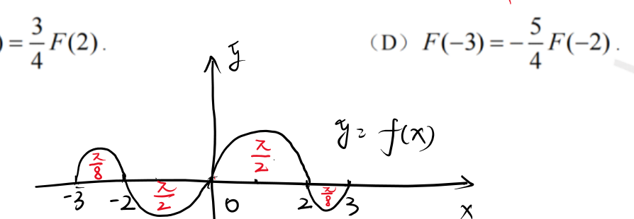
课件原图展开
📐 课件原图: 上下半圆周组合的 f(x) 图形（定积分 页1）
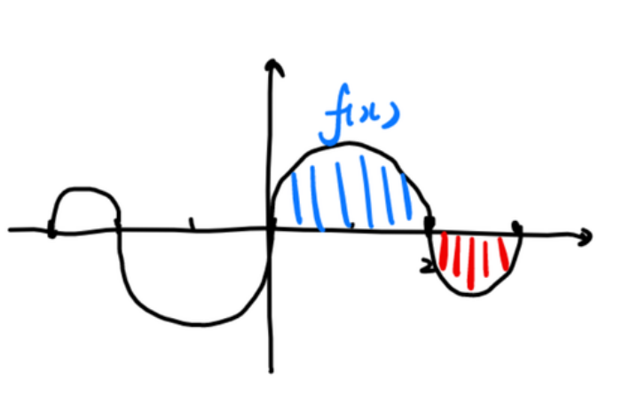
课件原图展开
📐 课件原图: 半圆与积分区域图形（0716(1) 页1）
连续函数 $f(x)$ 在 $[-3,-2],[2,3]$ 上分别是以 1 为直径的上/下半圆, 在 $[-2,0],[0,2]$ 上分别是以 2 为直径的下/上半圆。记 $F(x)=\int_0^x f(t)dt$, 下列结论正确的是?
解答过程
① 利用圆的面积公式: 上半圆面积 $= \frac{\pi}{2}r^2$, 下半圆面积 $= -\frac{\pi}{2}r^2$$F(x)=\int_0^x f(t)dt$ 是 $f$ 的带符号面积: $f>0$ 段加正面积, $f<0$ 段加负面积; 直径 1 半径 $\frac12$, 直径 2 半径 1
② $F(3) = \int_0^3 f$: 从 $0\to 2$ 是以 2 为直径的上半圆(面积 $+\frac{\pi}{2}$), $2\to 3$ 是以 1 为直径的下半圆(面积 $-\frac{\pi}{8}$) 【AI补全, 半径计算】$F(3)=\frac{\pi}{2}\cdot1^2-\frac{\pi}{2}\cdot(\frac12)^2=\frac{\pi}{2}-\frac{\pi}{8}=\frac{3\pi}{8}$; 沿 $x$ 增方向逐段累加
③ 类似计算 $F(-2),F(-3)$: $F(-2)=\int_0^{-2}f=-\int_{-2}^0f=-(-\frac{\pi}{2})=\frac{\pi}{2}$; $F(-3)=F(-2)-\int_{-3}^{-2}f=\frac{\pi}{2}-\frac{\pi}{8}=\frac{3\pi}{8}$ 【AI补全】往左积分是反向累加: 先取 $-2\to0$ 段下半圆面积 $-\frac{\pi}{2}$ 取负得 $\frac{\pi}{2}$, 再减 $-3\to-2$ 段上半圆面积 $\frac{\pi}{8}$
④ 【注】OCR 选项模糊: 已算出 $F(\pm2)=\frac{\pi}{2}$, $F(\pm3)=\frac{3\pi}{8}$, 按此值对照选项即可选项缺失不影响方法: 各关键点值都是几何面积, 对得上哪个选项就选哪个
⭐ 经典: 变上限积分=带符号面积: 圆面积按 $\pm\frac{\pi}{2}r^2$ 逐段累加, 反向积分注意变号。
例 8.5 变上限的奇偶性 【0715（2）】
设奇函数 $f(x)$ 在 $(-\infty,+\infty)$ 上有连续导数, 则以下哪个是偶函数?
A. $\int_0^x [\cos f(t)+f'(t)]dt$
B. $\int_0^x [\cos f(t)+f(t)]dt$
解答过程
① $f$ 为奇 ⇒ $f'$ 为偶函数; $\cos f(t)$: 若 $f$ 为奇, $\cos f(-t)=\cos(-f(t))=\cos f(t)$, 为偶奇函数求导变偶; 余弦是偶函数, 复合后仍偶; $f$ 有连续导数保证 $f'$ 连续可讨论
② 检查各选项被积函数的奇偶性: (A) 被积 $= \cos f(t) + f'(t)$, 均为偶 ⇒ 积分为奇偶+偶=偶; 偶函数从 0 起的变上限积分是奇函数 (结论见 ④)
③ (B) 被积 $= \cos f(t) + f(t)$, 偶 + 奇 ⇒ 既非奇也非偶偶+奇一般不再有奇偶性 (除非某部分恒为零), 其积分也不保证奇偶
④ 回顾结论: $f$ 奇 ⇒ $\int_0^x f(t)dt$ 为偶, $f$ 偶 ⇒ $\int_0^x f(t)dt$ 为奇证明: $F(-x)=\int_0^{-x}f(t)dt$ 换元 $u=-t$ 得 $F(-x)=\int_0^x f(-u)(-du)$, 由 $f$ 奇偶性直接看出 $F$ 的符号
⑤ 题干问"哪个是偶函数": 需被积函数为奇函数 (奇函数的变上限积分才是偶函数)。(A) 积分结果是奇函数, (B) 无奇偶性, 给定两选项均不符 ⇒ OCR 选项残缺; 若原题补选项 $f(t)\cos f(t)$, 则 $f$ 奇、$\cos f$ 偶 ⇒ 乘积为奇, 其积分是偶函数奇×偶=奇, 这是此类题的常见正确选项形式
⑥ 【注】OCR 选项和答案残缺: 就给出的 (A)(B) 而言均非偶函数; 判断依据"被积为奇 ⇒ 积分为偶"是解题核心把奇偶性结论作为唯一确定的标准: 无论选项怎样补全, 判断流程不变
⭐ 经典: 奇偶性定积分奇偶: $f$ 奇⇒$f'$、$\cos f$ 偶; 被积偶⇒积分奇, 被积奇⇒积分偶。
例 8.6 分段函数变上限 【0715（2）例 4.11】
$f(x) = \begin{cases} \sin x, & 0 \leq x < \pi \\ 2, & \pi \leq x \leq 2\pi \end{cases}$, $F(x)=\int_0^x f(t)dt$, 则 $x=\pi$ 处?
解答过程
① 变上限积分函数必连续, 所以 $F(x)$ 在 $x=\pi$ 处连续$f$ 分段但只有有限个跳跃点: 定积分作为上限函数仍是 $x$ 的连续函数 (面积不会突变)
② 检查可导性: $F'(\pi^-) = f(\pi^-) = \sin\pi = 0$$f$ 在 $\pi$ 左连续, 左导数等于 $f$ 的左极限值
③ $F'(\pi^+) = f(\pi^+) = 2$, 左右导数不等$f$ 在 $\pi$ 处右极限为 2; 左 0 右 2 不相等, 与"跳跃间断点处不可导"一致
④ 所以 $F(x)$ 在 $x=\pi$ 处连续但不可导, 选 (C)考点 被积函数有跳跃间断 ⇒ 原函数连续但不可导, 结论直接背
⭐ 经典: 变上限恒连续; $f$ 有跳跃点处 $F$ 不可导, 左导数取 $f$ 左极限、右导数取右极限。
例 8.7 定积分与变上限综合 【0715（2）例 4.2】
设 $f(x) = \frac{1}{1+x^2} + \sqrt{1-x^2}\int_0^1 f(x)dx$, 求 $f(x)$。
- 理论定积分性质 相关例 11.7 同"把未知积分当常数设 $A$ 列方程", 一个对 $f$ 的显式表达式、一个对微分方程
解答过程
① 设 $A = \int_0^1 f(x)dx$, 则 $f(x) = \frac{1}{1+x^2} + A\sqrt{1-x^2}$定积分是常数: 把未知的 $\int_0^1 f$ 记作 $A$, $f$ 就被 $A$ 显式表出
② 两边在 $[0,1]$ 上积分: $A = \int_0^1 \frac{dx}{1+x^2} + A\int_0^1 \sqrt{1-x^2}\,dx$积分线性: $\int f = \int\frac{1}{1+x^2} + A\int\sqrt{1-x^2}$, 关键一步得到关于 $A$ 的方程
③ $\int_0^1 \frac{dx}{1+x^2} = \arctan x\big|_0^1 = \frac{\pi}{4}$$\int\frac{dx}{1+x^2}=\arctan x$ 是基本积分表结论
④ $\int_0^1 \sqrt{1-x^2}\,dx = \frac{\pi}{4}$ (四分之一圆)被积函数是单位圆的上半圆, 区间 $[0,1]$ 对应四分之一圆面, 面积 $\frac{\pi}{4}$; 也可三角换元 $x=\sin t$ 验证
⑤ $A = \frac{\pi}{4} + A\cdot\frac{\pi}{4}$, 解得 $A = \frac{\pi}{4-\pi}$移项 $A(1-\frac{\pi}{4})=\frac{\pi}{4}$, 即 $A=\frac{\pi}{4-\pi}$
⑥ $f(x) = \frac{1}{1+x^2} + \frac{\pi}{4-\pi}\sqrt{1-x^2}$ 【AI补全】把 $A$ 代回 ① 的表达式; 可验算: 两边再积分能还原出 $A$
⭐ 经典: 含未知定积分的方程: 记 $A=\int f$, 两边积分解出 $A$, 代回即得 $f$。
例 8.8 变上限积分与定积分关系 【0715（2）例 4.12】
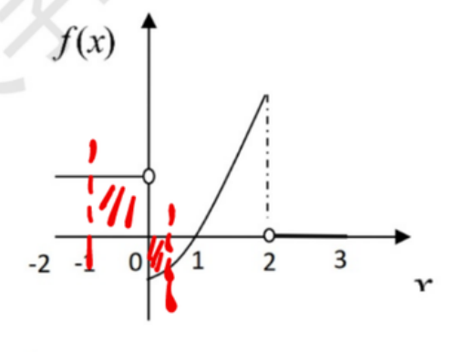
课件原图展开
📐 课件原图: f(x) 在 [−1,3] 上的图形（0716(1) 页13）
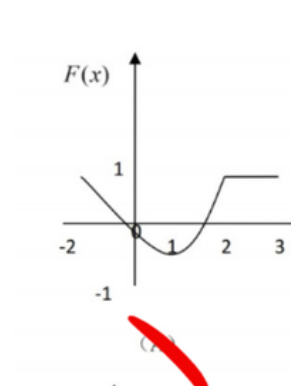
课件原图展开
📐 课件原图: 选项 A: F(x) 图形（0716(1) 页13）
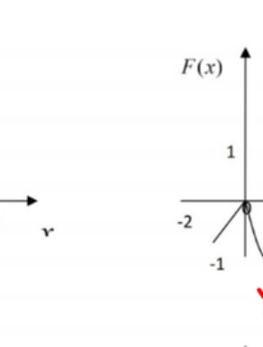
课件原图展开
📐 课件原图: 选项 B: F(x) 图形（0716(1) 页13）
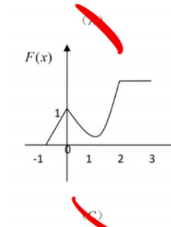
课件原图展开
📐 课件原图: 选项 C: F(x) 图形（0716(1) 页13）
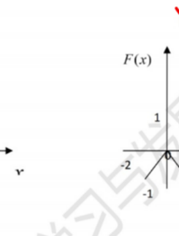
课件原图展开
📐 课件原图: 选项 D: F(x) 图形（0716(1) 页13）
$y=f(x)$ 在 $[-1,3]$ 上的图形已知, $F(x)=\int_0^x f(t)dt$ 的图形是? 【图形题, 此处略去选项】
解答过程
① $F'(x) = f(x)$, 所以 $f(x)>0$ 时 $F$ 递增, $f(x)<0$ 时 $F$ 递减导数符号决定单调性: $F$ 的增减区间与 $f$ 的正负区间一一对应, 极值点出现在 $f=0$ 处
② $F(0)=0$, 积分的正负决定 $F$ 值的正负起点 $F(0)=0$ 固定; $F(x)$ 是 $[0,x]$ 上带符号面积, $f$ 正面积多于负面积则 $F>0$
③ 结合图形判断 $F$ 的走向和关键点值考点 图形题四要素: 单调性 ($f$ 符号)、凹凸性 ($f'$ 符号)、起点 $F(0)=0$、对称性
⭐ 经典: 由 $f$ 图形画 $F$ 图形: 单调看 $f$ 符号, 凹凸看 $f'$, 起点 $F(0)=0$。
九、定积分 · 分部积分
例 9.1 【0510（1）】
计算 $\displaystyle\int_0^1 \frac{\ln(1+x)}{(2-x)^2}dx$。
解答过程
① 分部: 令 $u = \ln(1+x)$, $dv = \frac{dx}{(2-x)^2}$, 则 $du = \frac{dx}{1+x}$, $v = \frac{1}{2-x}$考点 对数与分式相乘取 $u=\ln$: $d\frac{1}{2-x}=\frac{dx}{(2-x)^2}$, 导数恰为 $dv$
② 原式 $= \frac{\ln(1+x)}{2-x}\big|_0^1 - \int_0^1 \frac{dx}{(2-x)(1+x)}$分部公式 $\int u\,dv = uv-\int v\,du$: 代入后余下的是分母两个一次因式的有理积分
③ 第一项: $\frac{\ln 2}{1} - \frac{0}{2} = \ln 2$代端点: 上端 $\frac{\ln2}{1}$, 下端 $\frac{\ln1}{2}=0$, 边界项干净
④ 部分分式: $\frac{1}{(2-x)(1+x)} = \frac{1}{3}\left(\frac{1}{2-x}+\frac{1}{1+x}\right)$待定系数验算: 通分后分子 $(1+x)+(2-x)=3$, 除以 3 还原
⑤ 积分得 $\frac{1}{3}[-\ln|2-x|+\ln|1+x|]_0^1 = \frac{1}{3}(\ln 2 - (-\ln 2)) = \frac{2}{3}\ln 2$ 【AI补全】$\int\frac{dx}{2-x}=-\ln|2-x|$ 注意负号; 下端 $-\ln2+\ln1=-\ln2$, 上端 $\ln2$, 差为 $2\ln2$
⑥ 最终 $= \ln 2 - \frac{2}{3}\ln 2 = \frac{1}{3}\ln 2$合并同类项 $\ln2$: 系数 $1-\frac23=\frac13$
⭐ 经典: 分部积分消对数 + 部分分式拆有理式, 两段都积出 $\ln2$, 合并得 $\frac13\ln2$。
例 9.2 【0715（2）例 4.8】
设 $f(x)$ 在 $[0,\pi]$ 上有连续二阶导数, 且 $\int_0^\pi [f(x)+f''(x)]\sin x\,dx = 2$, $f(0)=1$, 求 $f(\pi)$。
- 理论分部积分公式 相关例 15.4 同为"分部后积分项相消、边界项定值", 一个消 $\int f\sin x$、一个消 $\int(fg)'$
解答过程
① 处理 $\int_0^\pi f''(x)\sin x\,dx$: 分部积分$\sin x$ 两次分部会回到 $f(x)\sin x$ 项, 恰好与原式第一项相消——这是题目设计好的
② $\int_0^\pi f''(x)\sin x\,dx = [f'(x)\sin x]_0^\pi - \int_0^\pi f'(x)\cos x\,dx$$\sin x$ 在 $0,\pi$ 处为 0, 边界项 $[f'\sin x]_0^\pi=0$ 自动消失
③ $= 0 - \left([f(x)\cos x]_0^\pi + \int_0^\pi f(x)\sin x\,dx\right)$再分部: $\int f'\cos x\,dx=[f\cos x]-\int f(\cos x)'dx$, 而 $(\cos x)'=-\sin x$ 使括号内出现 $+\int f\sin x$
④ $= -(-f(\pi)-f(0)) - \int_0^\pi f(x)\sin x\,dx = f(\pi)+f(0)-\int_0^\pi f(x)\sin x\,dx$边界: $[f\cos x]_0^\pi=f(\pi)(-1)-f(0)\cdot1=-f(\pi)-f(0)$, 整体取负得 $f(\pi)+f(0)$
⑤ 代回原式: $\int_0^\pi f(x)\sin x\,dx + f(\pi)+f(0) - \int_0^\pi f(x)\sin x\,dx = 2$两个 $\int f\sin x$ 异号相消, 只剩边界项——两次分部的意义所在
⑥ 化简: $f(\pi)+f(0)=2$, $f(\pi)+1=2$, 所以 $f(\pi)=1$代入已知 $f(0)=1$ 直接解出 $f(\pi)$, 无需解出 $f$ 本身
⭐ 经典: $f+f''$ 配 $\sin x$: 连续两次分部, 边界项保留而积分项相消, 直接定出 $f(\pi)$。
例 9.3 变上限分部 【0715（2）例 4.13】
设 $f(x) = \int_1^{\sqrt{x}} \frac{\ln(t+1)}{t}dt$, 计算 $\int_0^1 \frac{f(x)}{\sqrt{x}}dx$。
解答过程
① $\int_0^1 \frac{f(x)}{\sqrt{x}}dx = 2\int_0^1 f(x)d\sqrt{x}$凑微分: $d\sqrt{x}=\frac{dx}{2\sqrt{x}}$, 把 $\frac{1}{\sqrt{x}}dx$ 变成 $2\,d\sqrt{x}$, 为分部做准备
② 分部: $= 2\left[\sqrt{x}f(x)\right]_0^1 - 2\int_0^1 \sqrt{x}f'(x)dx$分部公式 $\int u\,dv=uv-\int v\,du$: 取 $u=f(x)$, 把 $f'$ 引进积分, 好利用变上限求导
③ $f(1)=0$ ($\sqrt{1}=1$, 上下限相同), $\sqrt{x}f(x)\to 0$ ($x\to 0$), 第一项为 0$f(1)=\int_1^1=0$; 在 $x\to0$ 时 $f(x)$ 有界 (固定区间上的积分值有限), 乘 $\sqrt{x}\to0$, 边界项整体消失
④ $f'(x) = \frac{\ln(\sqrt{x}+1)}{\sqrt{x}}\cdot\frac{1}{2\sqrt{x}} = \frac{\ln(\sqrt{x}+1)}{2x}$ 【AI补全】变上限求导: 内层 $\sqrt{x}$ 代入被积函数, 再乘链式因子 $\frac{1}{2\sqrt{x}}$
⑤ 代入: 原式 $= -2\int_0^1\sqrt{x}\cdot\frac{\ln(1+\sqrt{x})}{2x}dx = -\int_0^1\frac{\ln(1+\sqrt{x})}{\sqrt{x}}dx$, 换元 $u=\sqrt{x}$: $= -2\int_0^1\ln(1+u)du = -2\big[(1+u)\ln(1+u)-u\big]_0^1 = 2-4\ln 2$ 【修正: 原稿 $8-4\ln 2-2\pi$ 与重算不符; 且 $x\in(0,1)$ 时 $f(x)<0$, 积分必为负, 原值也违背符号】换元 $u=\sqrt{x}$ 后 $\frac{1}{\sqrt{x}}dx=2du$; $\int\ln(1+u)du$ 分部得 $(1+u)\ln(1+u)-u$; 数值验证 $2-4\ln2\approx-0.77<0$ ✓
⭐ 经典: 变上限复合 + 分部 + 换元三步连环: 边界为零后代入 $f'$, 换元 $u=\sqrt{x}$, 得 $2-4\ln2$。
十、定积分 · 比大小
例 10.1 【0715（2）例 4.3】
$I_1 = \int_0^{\frac{\pi}{4}} \frac{\tan x}{x}dx$, $I_2 = \int_0^{\frac{\pi}{4}} \frac{x}{\tan x}dx$, 则?
解答过程
① $x\in(0,\frac{\pi}{4})$ 时, $\tan x > x$, 所以 $\frac{\tan x}{x} > 1$, $\frac{x}{\tan x} < 1$$\tan x>x$ 是常用不等式: 由 $f(x)=\tan x-x$, $f'(x)=\sec^2x-1>0$, $f(0)=0$ 推出
② $I_1 > \int_0^{\pi/4} 1\,dx = \frac{\pi}{4} < 1$, $I_2 < \frac{\pi}{4}$被积函数逐点大于 (或小于) 1, 积分保持同向大小关系; 但 $\frac{\pi}{4}$ 还不足以定出 $I_1$ 与 1 的大小
③ 实际上 $\int_0^{\pi/4} \frac{\tan x}{x}dx > \int_0^{\pi/4} dx = \frac{\pi}{4}$同 ②: $\tan x/x>1$ 在 $(0,\frac{\pi}{4})$ 上严格成立, 积分严格大于区间长
④ 而 $\int_0^{\pi/4} \frac{x}{\tan x}dx < \int_0^{\pi/4} dx = \frac{\pi}{4} < 1$$\frac{x}{\tan x}\in(0,1)$, 故 $I_2<\frac{\pi}{4}<1$; 至此 $I_2$ 与 $1$ 的关系已定
⑤ 再看 $I_1$ 与 1: $\left(\frac{\tan x}{x}\right)'=\frac{2x-\sin 2x}{2x^2\cos^2x}>0$, 故 $\frac{\tan x}{x}$ 单调增, 在 $[0,\frac{\pi}{4}]$ 上最大值 $\frac{\tan\frac{\pi}{4}}{\frac{\pi}{4}}=\frac{4}{\pi}$, 于是 $I_1<\frac{4}{\pi}\cdot\frac{\pi}{4}=1$; 综上 $I_2<\frac{\pi}{4}<I_1<1$ 【修正: 原"$I_1>1$"有误, 数值验证 $I_1\approx0.85<1$】$2x>\sin2x$ (因 $\sin t<t$ 对 $t>0$) 保证分子为正; 积分不超过最大值乘区间长, 且取不到, 严格小于 1
⭐ 经典: 逐点不等式定积分大小: $\tan x>x$ 推出 $I_2<\frac{\pi}{4}<I_1$, 再用单调性上界 $\frac{4}{\pi}$ 推出 $I_1<1$。
例 10.2 【0715（2）例 4.4】
$I_k = \int_0^{k\pi} e^{x^2}\sin x\,dx$ $(k=1,2,3)$, 比较 $I_1,I_2,I_3$。
解答过程
① $I_2 = I_1 + \int_\pi^{2\pi} e^{x^2}\sin x\,dx$, 在 $[\pi,2\pi]$ 上 $\sin x \leq 0$, 所以第二项 $\leq 0$区间拆分 $[0,2\pi]=[0,\pi]\cup[\pi,2\pi]$: 第二段 $\sin$ 恒负, 贡献负面积
② 且 $e^{x^2}$ 单调增 → 后段负面积绝对值更大 → $I_2 < I_1$严格化: 换元 $t=x-\pi$, $\int_\pi^{2\pi}e^{x^2}\sin x\,dx=-\int_0^\pi e^{(t+\pi)^2}\sin t\,dt<-\int_0^\pi e^{t^2}\sin t\,dt=-I_1<0$, 故 $I_2<0<I_1$
③ $I_3 = I_2 + \int_{2\pi}^{3\pi} e^{x^2}\sin x\,dx$, 在 $[2\pi,3\pi]$ 上 $\sin x \geq 0$, 正面积更大 → $I_3 > I_2$第三段 $\sin$ 恒正, 加上的项严格大于 0
④ 比较 $I_3$ 与 $I_1$: $I_3-I_1=-\int_\pi^{2\pi}e^{x^2}|\sin x|dx+\int_{2\pi}^{3\pi}e^{x^2}\sin x\,dx=\int_0^\pi\big[e^{(t+2\pi)^2}-e^{(t+\pi)^2}\big]\sin t\,dt>0$两段都换到 $[0,\pi]$ 对齐被积函数 $\sin t$: 正段权重 $e^{(t+2\pi)^2}$ 大于负段 $e^{(t+\pi)^2}$, 逐点差为正, 所以 $I_3>I_1$
⑤ 结论: $I_2 < I_1 < I_3$ 【修正: OCR 两种猜测中取后者; 权重 $e^{x^2}$ 随 $x$ 增大, 正段在后收益更大】合并: $I_2<I_1$ (②), $I_3>I_2$ (③), $I_3>I_1$ (④), 排序唯一
⭐ 经典: 周期正负分段比大小: $\sin$ 定号分段, 换元对齐后靠 $e^{x^2}$ 的增减性比权重, 得 $I_2<I_1<I_3$。
例 10.3 【0715（2）例 4.5】
设 $M = \int_{-\frac{\pi}{2}}^{\frac{\pi}{2}} \frac{\sin x}{1+x^2}\cos^4 x\,dx$, $N = \int_{-\frac{\pi}{2}}^{\frac{\pi}{2}} (\sin^3 x + \cos^4 x)dx$, $P = \int_{-\frac{\pi}{2}}^{\frac{\pi}{2}} (x^2\sin^3 x - \cos^4 x)dx$, 比较 $M,N,P$。
解答过程
① $M$: 被积函数 $\frac{\sin x}{1+x^2}\cos^4 x$ 是奇函数(分子奇, 分母偶, $\cos^4 x$ 偶 ⇒ 奇), $M=0$考点 奇函数在对称区间 $[-a,a]$ 上的积分为 0; 奇偶性按"奇×偶=奇"逐因子判断
② $N$: $\sin^3 x$ 奇 ⇒ 积分为 0, $\cos^4 x$ 偶 ⇒ $N = 2\int_0^{\pi/2}\cos^4 x\,dx > 0$偶函数在 $[-a,a]$ 的积分是 $[0,a]$ 上的两倍; 两部分拆开分别用奇偶性
③ $P$: $x^2\sin^3 x$ 奇 ⇒ 0, $-\cos^4 x$ 偶 ⇒ $P = -2\int_0^{\pi/2}\cos^4 x\,dx < 0$$x^2$ 偶、$\sin^3x$ 奇 ⇒ 乘积奇; $-\cos^4x$ 偶, 故 $P$ 是 $N$ 中偶部的相反数
④ 所以 $P < M < N$ (即 $P < 0 = M < N$), 选 (D) 【AI补全】三数定号即排序; 若需数值: $\int_0^{\pi/2}\cos^4x\,dx=\frac{3\pi}{16}$ (点火公式), $N=\frac{3\pi}{8}$
⭐ 经典: 对称区间定号比大小: 奇函数积分为 0 是主武器, 偶部拆出后定正负, 得 $P<M<N$。
十一、反常积分 · 判敛与计算
例 11.1 p-积分 【0510（1）例 5.16】
证明 $\displaystyle\int_a^{+\infty} \frac{dx}{x^p}$ $(a>0)$ 当 $p>1$ 时收敛, $p \leq 1$ 时发散。
解答过程
① $p \neq 1$: $\int_a^b x^{-p}dx = \frac{x^{1-p}}{1-p}\big|_a^b = \frac{b^{1-p}-a^{1-p}}{1-p}$反常积分收敛 ⟺ 极限存在: 先算定积分再令 $b\to+\infty$; $a>0$ 保证 $x=0$ 不是瑕点
② $b\to+\infty$: 若 $p>1$, $b^{1-p}\to 0$, 收敛; 若 $p<1$, $b^{1-p}\to\infty$, 发散$1-p<0$ 时负指数幂趋于 0; $1-p>0$ 时趋于无穷; 收敛性由指数符号唯一决定
③ $p=1$: $\int_a^b \frac{dx}{x} = \ln b - \ln a \to \infty$, 发散$p=1$ 是临界情形, 对数发散; 结论记忆: 无穷限 $p$-积分 $p>1$ 收敛、$p\le1$ 发散
⭐ 经典: 无穷限 $p$-积分: 先积后代上限取极限, 收敛 ⟺ $p>1$; 与瑕积分结论 ($q<1$ 收敛) 互补记忆。
例 11.2 无穷限反常积分计算 【0510（1）】
计算 $\displaystyle\int_1^{+\infty} \frac{\ln x}{(1+x)^2}dx$。
解答过程
① 分部: 原式 $= \int_1^{+\infty} \ln x\,d\left(-\frac{1}{1+x}\right)$$d\frac{1}{1+x}=-\frac{dx}{(1+x)^2}$; $\ln x$ 留 $u$ 位、幂函数放 $dv$ 位, 对数求导后变成纯有理式
② $= -\frac{\ln x}{1+x}\big|_1^{+\infty} + \int_1^{+\infty}\frac{dx}{x(1+x)}$分部公式: 边界项 $-\frac{\ln x}{1+x}$, 余项 $\int\frac{1}{1+x}\cdot\frac{1}{x}dx$
③ 第一项: $x\to+\infty$, $-\frac{\ln x}{1+x}\to 0$; $x=1$: $-\frac{0}{2}=0$, 第一项 $=0$对数增长慢于任何正次幂: $\frac{\ln x}{1+x}\sim\frac{\ln x}{x}\to0$; 两端都为零, 边界项干净
④ $\frac{1}{x(1+x)} = \frac{1}{x} - \frac{1}{1+x}$, 积分 $\to [\ln x - \ln(1+x)]_1^{+\infty}$拆成两个 $\ln$ 型各自可积; 上限按极限理解
⑤ $= \lim_{b\to\infty}\ln\frac{b}{1+b} - \ln\frac{1}{2} = 0 + \ln 2 = \ln 2$ 【AI补全】$\ln\frac{b}{1+b}\to\ln1=0$; 下端 $\ln1-\ln2=-\ln2$, 减下端得 $+\ln2$
⭐ 经典: 无穷限分部: 边界 $\frac{\ln x}{1+x}\to0$ 是关键, 余下有理式拆项积分, 答案 $\ln2$。
例 11.3 瑕积分判敛 【0510（2）例 5.18】
证明 $\displaystyle\int_a^b \frac{dx}{(x-a)^q}$ 当 $q<1$ 时收敛, $q \geq 1$ 时发散。
- 理论瑕积分 相关例 11.1 与无穷限 $p$ 结论 ($p>1$ 收敛) 互补, 方向相反
解答过程
① $x=a$ 为瑕点, 考虑 $\lim_{t\to a^+}\int_t^b (x-a)^{-q}dx$被积函数在 $x=a$ 无界, 反常积分定义为 $t\to a^+$ 的极限; 收敛 ⟺ 极限存在且有限
② $q \neq 1$: $= \frac{(b-a)^{1-q} - (t-a)^{1-q}}{1-q}$原函数 $\frac{(x-a)^{1-q}}{1-q}$, 代上下限 $b$ 与 $t$ 后只需关注 $t\to a^+$ 时的行为
③ $t\to a^+$: 若 $q<1$, $(t-a)^{1-q}\to 0$, 收敛; 若 $q>1$, $1-q<0$, $(t-a)^{1-q}\to\infty$, 发散与无穷限 $p$-积分结论相反: 瑕点在左端要求指数 $<1$ 才收敛
④ $q=1$: $\int \frac{dx}{x-a} = \ln(x-a)$, $t\to a^+$ 时发散$\ln(x-a)\to-\infty$; 临界情形 $q=1$ 发散; 结论: 瑕积分 $q<1$ 收敛、$q\ge1$ 发散
⭐ 经典: 左端瑕积分: 先积出原函数再代 $t\to a^+$ 取极限, 收敛 ⟺ $q<1$。
例 11.4 双瑕点判敛 【0715（2）例 4.20】
若 $\displaystyle\int_0^{+\infty} \frac{dx}{x^a(1+x)^b}$ 收敛, 则?
解答过程
① 需要检查两个瑕点: $x\to 0^+$ 和 $x\to +\infty$易错 双瑕点必须两段分别判敛, 只查一端会漏条件; 两段各自收敛才整体收敛
② $x\to 0^+$ 时: $\frac{1}{x^a(1+x)^b} \sim \frac{1}{x^a}$, $x=0$ 是瑕点; 收敛条件: $a<1$等价无穷小: $x\to0$ 时 $(1+x)^b\to1$, 主部是 $x^{-a}$; 对照瑕 $p$-积分 $q=a<1$
③ $x\to +\infty$ 时: $\frac{1}{x^a(1+x)^b} \sim \frac{1}{x^{a+b}}$, 收敛条件: $a+b>1$$x\to\infty$ 时 $1+x\sim x$, 主部 $x^{-(a+b)}$; 对照无穷限 $p$-积分 $p=a+b>1$
④ 综上: $a<1$ 且 $a+b>1$, 选 (C)两条件缺一不可; 结论直接背: 幂乘积型双端判敛看两端指数
⭐ 经典: 双瑕点分段判敛: 两端各自化标准幂型, $a<1$ 且 $a+b>1$ 同时满足才收敛。
例 11.5 三角瑕积分判敛 【0715（2）例 4.21】
设 $a,b$ 均为正常数, 若 $\displaystyle\int_0^{\frac{\pi}{2}} \frac{dx}{\sin^a x\cos^b x}$ 收敛, 则?
- 理论反常积分判敛 相关例 11.4 同为双端化标准幂型判敛, 本例借 $\sin x\sim x$、$\cos x\sim\frac\pi2-x$
解答过程
① 检查两个端点: $x\to 0^+$ 和 $x\to \frac{\pi}{2}^-$两个端点都是瑕点 ($\sin^a x$ 在 0 为零、$\cos^b x$ 在 $\frac{\pi}{2}$ 为零), 分段判敛
② $x\to 0^+$: $\sin x \sim x$, 被积函数 $\sim \frac{1}{x^a}$, 收敛需要 $a<1$$\cos^b x\to1$ 不影响主部; 化标准瑕 $p$-积分 $q=a$
③ $x\to \frac{\pi}{2}^-$: 令 $t=\frac{\pi}{2}-x$, $\cos x = \sin t \sim t$, 被积函数 $\sim \frac{1}{t^b}$, 收敛需要 $b<1$诱导公式 $\cos x=\sin(\frac{\pi}{2}-x)$; 与左端对称地要求 $b<1$
④ 所以 $a<1$ 且 $b<1$, 选 (B)两个指数各自小于 1, 与例 11.4 的双端判敛思路相同
⭐ 经典: 三角式瑕积分: 两端各用等价无穷小化幂型, $\sin x\sim x$、$\cos x\sim\frac{\pi}{2}-x$, 得 $a<1$ 且 $b<1$。
例 11.6 含对数与幂的瑕积分 【0715（2）例 4.22】
设 $m,n$ 均为正整数, $\displaystyle\int_0^1 \frac{\sqrt[m]{\ln^2(1-x)}}{\sqrt[n]{x}}dx$ 的收敛性?
- 理论反常积分判敛 相关例 11.5 同为双端判敛, 本例主角换成 $\ln(1-x)\sim-x$ 与 $|\ln t|^p$ 的可积性
解答过程
① $x\to 0^+$ 时: $\ln(1-x) \sim -x$, 分子 $\sim (x^2)^{1/m} = x^{2/m}$, 分母 $\sim x^{1/n}$, 被积 $\sim x^{\frac{2}{m}-\frac{1}{n}}$先定主部: $\ln(1-x)\sim-x$, 平方后 $\sim x^2$ 再开 $m$ 次方得 $x^{2/m}$
② $x=0$ 是瑕点, 收敛条件: $\frac{2}{m}-\frac{1}{n} > -1$ 【修正: 原稿"总是大于 0"表述有误】, 而 $\frac{2}{m}>0$、$\frac{1}{n}\le1$ 保证该式恒成立, 故 $x\to 0^+$ 端收敛瑕 $p$-积分要求指数 $>-1$ (如 $x^{-0.9}$ 可积); $\frac{2}{m}-\frac{1}{n}\ge-\frac{1}{n}>-1$, 与 $m,n$ 具体取值无关
③ $x\to 1^-$ 时: 令 $t=1-x$, $\ln(1-x)=\ln t$, 分子 $\sim |\ln t|^{2/m}$, $t\to 0^+$ 时 $\ln t$ 的任意正幂次乘以 $t$ 的任意正幂趋于 0$t\to0$ 时 $x^{1/n}=(1-t)^{1/n}\to1$; $\int_0^\varepsilon|\ln t|^{2/m}dt$ 换元 $u=-\ln t$ 后是 $\int u^{2/m}e^{-u}du$, 收敛
④ 结论: 与 $m,n$ 取值都无关, 总是收敛, 选 (D) 【AI补全】两端都收敛且与参数无关: 0 端靠对数弱于幂, 1 端靠 $|\ln t|^p$ 在 0 处可积
⭐ 经典: 双端含对数瑕积分: 0 端 $\ln(1-x)\sim-x$ 化幂型, 1 端 $|\ln t|^p$ 可积, 恒收敛与参数无关。
例 11.7 微分方程+反常积分 【0715（2）例 4.23】
$y(x)$ 满足 $y''+2y'+ky=0$ $(0<k<1)$, (1) 证明 $\int_0^{+\infty} y(x)dx$ 收敛; (2) $y(0)=1$, $y'(0)=1$ 时求积分值。
解答过程
① 特征方程 $r^2+2r+k=0$, $r = -1\pm\sqrt{1-k}$, 因 $0<k<1$, 两根均负判别式 $\Delta=4-4k>0$, 两根为实根; $-1+\sqrt{1-k}<0$ 因 $\sqrt{1-k}<1$
② 通解: $y = C_1e^{r_1x} + C_2e^{r_2x}$, $r_1,r_2<0$, $x\to+\infty$ 时指数衰减 → 积分收敛 ✓指数衰减保证反常积分收敛: $|y|\le Ce^{r_2x}$ 且 $r_2<0$, 与 $\int_0^\infty e^{-x}dx$ 同敛散
③ 不求具体解: 对 $y''+2y'+ky=0$ 在 $[0,+\infty)$ 上积分只需求 $\int y\,dx$: 对微分方程本身逐项积分, 各阶导数项化为边界值, 不必解出 $y$
④ $\int_0^{+\infty}y''dx + 2\int_0^{+\infty}y'dx + k\int_0^{+\infty}ydx = 0$线性方程逐项积分, $k\int y$ 就是目标量
⑤ $[y']_0^\infty + 2[y]_0^\infty + k\int_0^\infty y\,dx = 0$$\int y''=y'\big|_0^\infty$, $\int y'=y\big|_0^\infty$; 上下限对应 $y',y$ 在 $\infty$ 与 0 的值
⑥ $y(\infty)=y'(\infty)=0$ (指数衰减), $y(0)=1$, $y'(0)=1$衰减解在无穷远处函数值、导数值都趋于 0; 初值由题目给出
⑦ $-1 - 2 + k\int_0^\infty y\,dx = 0 \Rightarrow \int_0^\infty y\,dx = \frac{3}{k}$ 【AI补全】$[y']_0^\infty=0-1=-1$, $[y]_0^\infty=0-1=-1$, 代入 $-3+k\int y=0$, 移项得 $\frac{3}{k}$
⭐ 经典: 对微分方程整体积分: 边界衰减使 $\infty$ 端为零, 直接由初值定出 $\int_0^\infty y=\frac{3}{k}$。
例 11.8 无穷限反常积分 【0715（2）例 4.19】
计算 $\displaystyle\int_1^{+\infty} \frac{dx}{x(x^2+1)}$。
解答过程
① 部分分式: $\frac{1}{x(x^2+1)} = \frac{1}{x} - \frac{x}{x^2+1}$验算: 通分 $\frac{x^2+1-x^2}{x(x^2+1)}=\frac{1}{x(x^2+1)}$ ✓; 分母一次×二次因式, 拆成两个对数型
② $\int \frac{dx}{x} = \ln x$, $\int \frac{x}{x^2+1}dx = \frac{1}{2}\ln(x^2+1)$凑微分: $d(x^2+1)=2x\,dx$, 所以 $\int\frac{x}{x^2+1}dx=\frac12\ln(x^2+1)$
③ 原式 $= \lim_{b\to\infty}\left[\ln x - \frac{1}{2}\ln(x^2+1)\right]_1^b$上限 $b$ 先代后取极限, 下限 1 固定代入
④ $= \lim_{b\to\infty}\ln\frac{b}{\sqrt{b^2+1}} + \frac{1}{2}\ln 2 = \ln 1 + \frac{1}{2}\ln 2 = \frac{1}{2}\ln 2$ 【AI补全】$\frac{b}{\sqrt{b^2+1}}\to1$ 消除发散项; 下端 $\ln1-\frac12\ln2=-\frac12\ln2$, 减下端得 $+\frac12\ln2$
⭐ 经典: 拆项化成 $\ln$ 差, 上端 $\frac{b}{\sqrt{b^2+1}}\to1$ 消除发散项, 余 $\frac12\ln2$。
十二、定积分应用 · 面积与体积
例 12.1 直角坐标面积 【0510（2）例 5.19】
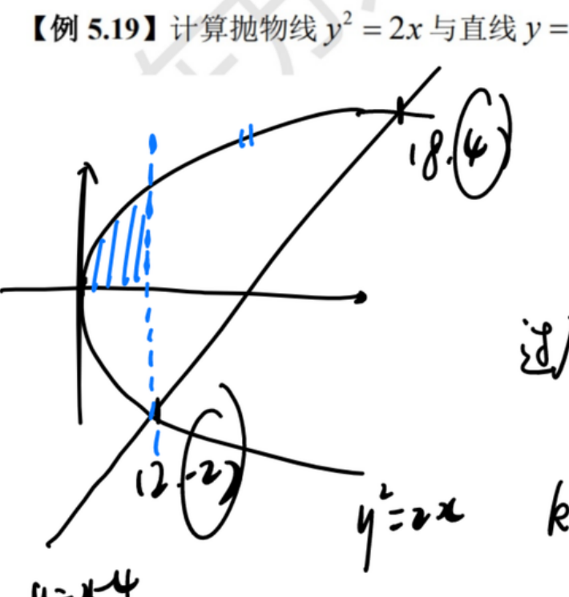
课件原图展开
📐 课件原图: 抛物线 y²=2x 与直线 y=x−4 围成区域（0510(2) 页6）
计算抛物线 $y^2=2x$ 与直线 $y=x-4$ 围成的图形面积。
解答过程
① 交点: 将 $x = y+4$ 代入 $y^2=2x$: $y^2 = 2y+8$, $y^2-2y-8=0$, $y=4$ 或 $y=-2$直线写成 $x=y+4$ 便于用 Y 型; 抛物线 $y^2=2x$ 的右支是 $x=\frac{y^2}{2}$; 交点 $(8,4)$、$(2,-2)$
② 用 Y 型: $S = \int_{-2}^4 \left[(y+4) - \frac{y^2}{2}\right]dy$Y 型面积公式: $\int (\text{右边界}-\text{左边界})dy$; 该区间内直线在右、抛物线在左, 差为正
③ $= \left[\frac{y^2}{2}+4y-\frac{y^3}{6}\right]_{-2}^4$逐项积分: $\int y\,dy=\frac{y^2}{2}$, $\int4\,dy=4y$, $\int\frac{y^2}{2}dy=\frac{y^3}{6}$
④ 代入计算 $= 18$ 【AI补全】上端: $8+16-\frac{64}{6}=\frac{40}{3}$; 下端: $2-8+\frac{8}{6}=-\frac{14}{3}$; 差 $\frac{40}{3}+\frac{14}{3}=18$
⭐ 经典: 直线与抛物线面积: 先求交点定 $y$ 范围, Y 型"右减左"积分, 结果 18。
例 12.2 切线+面积 【0510（2）例 5.20】
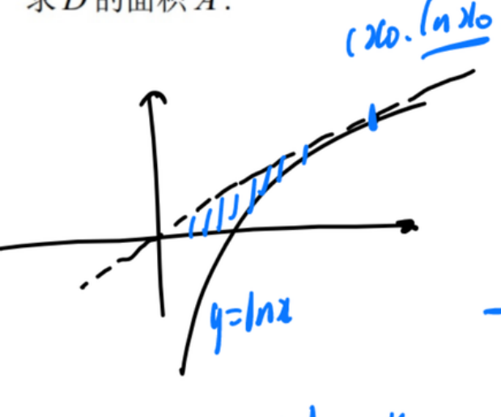
课件原图展开
📐 课件原图: y=ln x 过原点切线围成区域 D（0510(2) 页7）
过原点作曲线 $y=\ln x$ 的切线, 求切线与 $y=\ln x$ 及 $x$ 轴围成图形的面积。
解答过程
① 设切点 $(x_0,\ln x_0)$, 切线斜率 $k = \frac{1}{x_0}$$y'=\frac1x$ 在切点处取值即切线斜率; 切点参数 $x_0$ 由"过原点"条件定出
② 切线方程: $y - \ln x_0 = \frac{1}{x_0}(x - x_0)$点斜式: 过 $(x_0,\ln x_0)$、斜率 $\frac{1}{x_0}$
③ 过原点: $0 - \ln x_0 = \frac{1}{x_0}(0 - x_0) = -1$, 得 $\ln x_0 = 1$, $x_0 = e$代入 $(0,0)$ 后右边恰为 $-1$ (与 $x_0$ 无关), 得 $\ln x_0=1$
④ 切线: $y = \frac{x}{e}$代 $x_0=e$ 入点斜式化简: $y-1=\frac{x}{e}-1$, 即 $y=\frac{x}{e}$
⑤ 用 Y 型: $S = \int_0^1 (e^y - ey)dy = [e^y - \frac{e}{2}y^2]_0^1 = (e-\frac{e}{2}) - 1 = \frac{e}{2} - 1$反函数视角: $y\in[0,1]$ 时右边界是曲线 $x=e^y$, 左边界是切线 $x=ey$; 检查 $e^y-ey\ge0$ ($y=0$ 时 $1>0$, $y=1$ 时相等, $e^y-ey$ 在 $(0,1)$ 递减), 被积非负
⭐ 经典: 过原点切线用切点参数 $x_0$ 待定, 面积转 Y 型 $e^y-ey$, 结果 $\frac{e}{2}-1$。
例 12.3 极坐标面积 【0510（2）例 5.21】
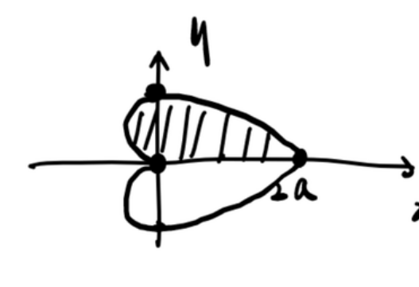
课件原图展开
📐 课件原图: 心形线 ρ=a(1+cosθ) 图形（0510(2) 页8）
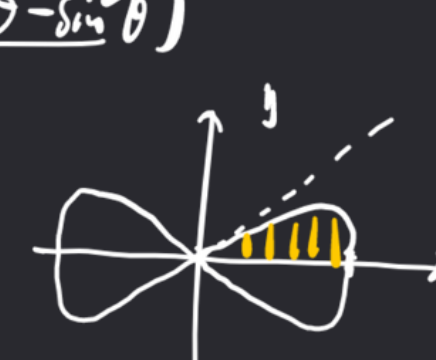
课件原图展开
📐 课件原图: 双纽线 (x²+y²)²=x²−y² 图形（0510(2) 页8）
计算心形线 $r = a(1+\cos\theta)$ $(a>0)$ 围成的图形面积。
- 理论平面图形面积 相关例 12.4 同用 $S=\frac12\int r^2d\theta$ + 对称性, 本例心形线、彼处双纽线
解答过程
① 对称性: 只需算上半再 ×2 (或利用 $[0,\pi]$ 区间 ×2)心形线关于极轴 ($\theta=0$) 对称, 总面积是 $[0,\pi]$ 部分的两倍
② $S = 2\cdot\frac{1}{2}\int_0^\pi a^2(1+\cos\theta)^2 d\theta = a^2\int_0^\pi (1+2\cos\theta+\cos^2\theta)d\theta$极坐标面积公式 $S=\frac12\int r^2d\theta$; 乘对称因子 2 后 $2\cdot\frac12=1$ 恰好消去系数
③ $\cos^2\theta = \frac{1+\cos 2\theta}{2}$倍角降幂, 把平方展开成可逐项积分的组合
④ $= a^2\int_0^\pi \left(\frac{3}{2}+2\cos\theta+\frac{\cos 2\theta}{2}\right)d\theta$$1+\frac12=\frac32$ 合并常数; $\cos\theta$、$\cos2\theta$ 整周期积分为零 (正弦原函数端点值相同)
⑤ $= a^2\left[\frac{3}{2}\theta + 2\sin\theta + \frac{\sin 2\theta}{4}\right]_0^\pi = \frac{3}{2}\pi a^2$只剩常数项贡献: $\frac32\cdot\pi$; $\sin\pi=\sin0=0$, 其余两项消失
⭐ 经典: 心形线面积: $S=\frac12\int r^2d\theta$ 配合对称性, 降幂后只剩常数项, 结果 $\frac32\pi a^2$。
例 12.4 双纽线面积 【0715（2）例 4.25】
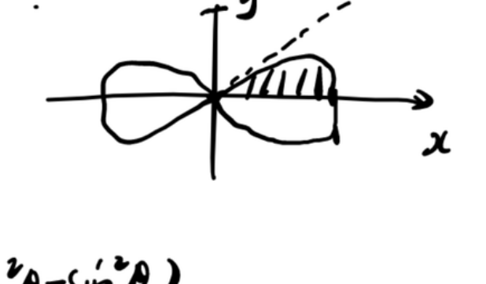
课件原图展开
📐 课件原图: 双纽线 (x²+y²)²=x²−y² 图形（0716(2) 页12）
双纽线 $(x^2+y^2)^2 = x^2 - y^2$ 围成区域面积。
- 理论平面图形面积 相关例 12.3 同为极坐标面积, 本例易错点在 $r^2=\cos2\theta\ge0$ 的扇区范围
解答过程
① 化为极坐标: $r^4 = r^2(\cos^2\theta - \sin^2\theta) = r^2\cos 2\theta$代入 $x=r\cos\theta$, $y=r\sin\theta$: $x^2+y^2=r^2$, $x^2-y^2=r^2\cos2\theta$
② $r^2 = \cos 2\theta$ (要求 $\cos 2\theta \geq 0$, 即 $|\theta| \leq \frac{\pi}{4}$ 或 $|\theta-\pi| \leq \frac{\pi}{4}$)易错 半径平方必须非负: $\cos2\theta<0$ 的区间无图形, 双纽线只在对角线夹的四个扇区内
③ 由对称性, 总面积 $= 4$ × 第一象限面积图形关于两坐标轴都对称, 四瓣全等, 只算第一象限再乘 4
④ $S = 4\cdot\frac{1}{2}\int_0^{\pi/4} \cos 2\theta\,d\theta = 2\int_0^{\pi/4}\cos 2\theta\,d\theta = [\sin 2\theta]_0^{\pi/4} = 1$系数整理: $4\cdot\frac12=2$; $\int\cos2\theta\,d\theta=\frac{\sin2\theta}{2}$, 常数 $\frac12$ 与系数 2 相抵; 代限 $\sin\frac{\pi}{2}-\sin0=1$
⭐ 经典: 双纽线面积: 极坐标化 $r^2=\cos2\theta$, 四倍第一象限面积, 结果恰为 1。
例 12.5 旋转体体积 【0510（2）例 5.22】
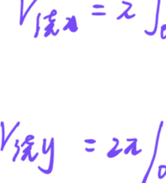
课件原图展开
📐 课件原图: y=x³、x=2、y=0 围成图形（0510(2) 页11）
$y=x^2$, $x=2$, $y=0$ 围成图形, 分别绕 $x$ 轴和 $y$ 轴旋转的体积。
解答过程
① 绕 $x$ 轴: $V_x = \pi\int_0^2 (x^2)^2 dx = \pi\int_0^2 x^4 dx = \pi\cdot\frac{32}{5} = \frac{32\pi}{5}$考点 垫片法: 每片是半径 $y=x^2$ 的圆盘, $dV=\pi y^2dx$; $\int_0^2x^4dx=\frac{2^5}{5}=\frac{32}{5}$
② 绕 $y$ 轴 (柱壳法): $V_y = 2\pi\int_0^2 x\cdot x^2 dx = 2\pi\int_0^2 x^3 dx = 2\pi\cdot 4 = 8\pi$柱壳法: 薄壳周长 $2\pi x$ × 高 $y=x^2$ × 厚 $dx$; 验算 (垫片法对 $y$): $V_y=\pi\int_0^4(4-y)dy=8\pi$ ✓; 关键是认准绕哪条轴、用哪种方法
⭐ 经典: 旋转体体积两法: 绕 $x$ 轴垫片 $\pi\int y^2dx$, 绕 $y$ 轴柱壳 $2\pi\int xy\,dx$, 得 $\frac{32\pi}{5}$ 与 $8\pi$。
例 12.6 绕平行轴旋转 【0510（2）例 5.23】
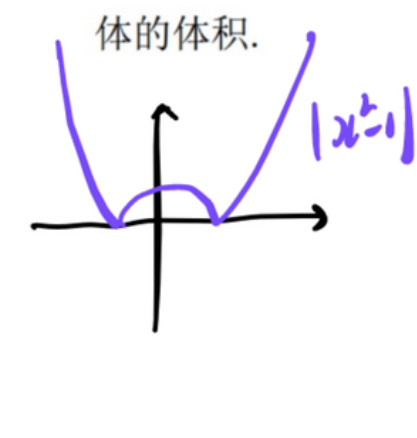
课件原图展开
📐 课件原图: y=3−|x²−1| 与 x 轴围成区域（0510(2) 页12）
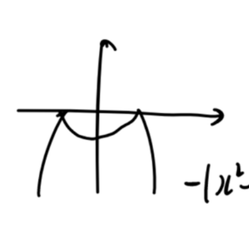
课件原图展开
📐 课件原图: −|x²−1| 的曲线图（0510(2) 页12）
$y=3-|x^2-1|$ 与 $x$ 轴围成封闭图形, 绕 $y=3$ 旋转的体积。
解答过程
① $y=3-|x^2-1|$, 图形关于 $y$ 轴对称$|x^2-1|$ 是偶函数, 图形对称, 积分可折半到 $[0,2]$
② 与 $x$ 轴交点: $3-|x^2-1|=0$, $|x^2-1|=3$, $x^2=4$ 或 $x^2=-2$ (舍), $x=\pm 2$解绝对值方程: $x^2-1=\pm3$; 取负时 $x^2=-2$ 无实解; 图形范围 $x\in[-2,2]$
③ 绕 $y=3$ 旋转, 半径 $R = 3 - (3-|x^2-1|) = |x^2-1|$旋转轴在图形上方: 半径是轴坐标 $3$ 减曲线纵坐标 $y$, 即 $3-y$
④ 用圆盘法: $V = \pi\int_{-2}^2 (x^2-1)^2 dx$ (在 $[-2,2]$ 上去绝对值)半径平方含绝对值, 平方后 $(x^2-1)^2$ 与去绝对值一致, 直接积分; 每片圆盘体积 $\pi R^2dx$
⑤ $= 2\pi\int_0^2 (x^4-2x^2+1)dx = 2\pi\left[\frac{32}{5}-\frac{16}{3}+2\right] = \frac{92\pi}{15}$ 【AI补全】偶函数折半乘 2; 括号内 $\frac{32}{5}-\frac{16}{3}+2=\frac{96-80+30}{15}=\frac{46}{15}$, 乘 $2\pi$ 得 $\frac{92\pi}{15}$
⑥ 【注】OCR 原文答案模糊, 按标准方法给出: $V=\frac{92\pi}{15}$圆盘法全程自洽 (半径非负、偶函数折半), 数值可自检: $92\pi/15\approx19.3$, 介于内径 1 外径 3 的柱体体积之间, 合理
⭐ 经典: 绕平行轴旋转: 半径是轴减曲线 ($3-y$), 偶函数折半积分, 结果 $\frac{92\pi}{15}$。
例 12.7 切线+体积综合 【0715（2）例 4.26】
过原点作 $y=\ln x$ 的切线, 切线与 $y=\ln x$ 及 $x$ 轴围成图形 $D$。
(1) 求 $D$ 的面积; (2) 求 $D$ 绕 $x=e$ 旋转的体积。
解答过程
① 同例 12.2, 切点 $(e,1)$, 切线 $y=\frac{x}{e}$, 面积 $S = \frac{e}{2}-1$沿用例 12.2 结论: $D$ 在 $y\in[0,1]$ 内夹于 $x=ey$ (切线) 与 $x=e^y$ (曲线) 之间
② 绕 $x=e$ 旋转: 注意这是绕平行于 $y$ 轴的直线旋转易错 轴是竖线 $x=e$: 不能用对 $x$ 的垫片法, 要对 $y$ 切片, 半径看 $x$ 方向的距离
③ 用 Y 型: $x=e$ 为旋转轴, 半径 $R = |e - x(y)|$区域内 $x(y)\le e$ ($y<1$ 时 $e^y<e$), 半径即 $e-x(y)$, 无需取绝对值
④ $V = \pi\int_0^1 (e-ey)^2 dy - \pi\int_0^1 (e-e^y)^2 dy$ 【AI补全】对 $y$ 切片: 外半径 $e-ey$ (离轴最远的切线侧), 内半径 $e-e^y$ (曲线侧), 大圆盘减小圆盘
⑤ $= \frac{\pi}{6}(5e^2-12e+3)$ 【AI补全, 依 OCR 答案】逐项核对: $\int_0^1(e-ey)^2dy=\frac{e^2}{3}$; $\int_0^1(e-e^y)^2dy=-\frac{e^2}{2}+2e-\frac12$; 差 $=\frac{5e^2}{6}-2e+\frac12=\frac{5e^2-12e+3}{6}$, 与 OCR 答案一致 ✓
⭐ 经典: 绕竖轴 $x=e$: 对 $y$ 切片外减内, $(e-ey)^2-(e-e^y)^2$ 积分, 结果 $\frac{\pi}{6}(5e^2-12e+3)$。
例 12.8 参数曲线+旋转体 【0715（3）例 4.27】
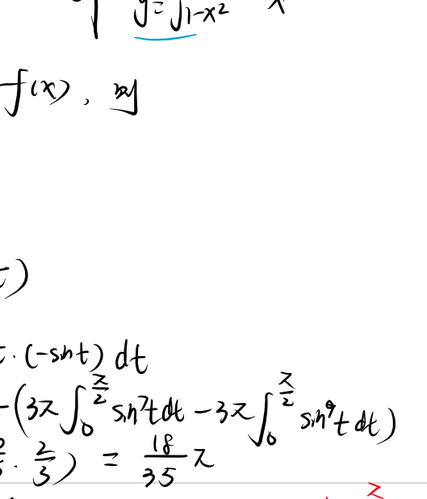
课件原图展开
📐 课件原图: 摆线与半圆围成区域 D（微分方程(1) 页3）
$D$ 由 $y=\sqrt{1-x^2}$ $(0\leq x\leq 1)$ 与 $\begin{cases} x=\cos^3 t \\ y=\sin^3 t \end{cases} (0\leq t\leq\frac{\pi}{2})$ 围成, 绕 $x$ 轴旋转的体积和表面积。
- 理论旋转体体积 相关例 13.3 侧面积部分 $2\pi\int y\,ds$ 与例 13.3 同一公式, 参数化算 $ds$
解答过程
① 体积: $V = \pi\int_0^1 (y_1^2 - y_2^2)dx$, 其中 $y_1=\sqrt{1-x^2}$, $y_2$ 由参数方程给出圆 $y_1$ 在星形线 $y_2$ 上方 (同 $x$ 处 $y_1>y_2$, 如 $x=0.5$ 处 $0.866>0.225$), 垫片法外圆减内圆
② $V = \pi\left[\int_0^1 (1-x^2)dx - \int_0^1 y_2^2 dx\right]$$y_1^2=1-x^2$ 直接写; 内层 $y_2$ 是 $x$ 的隐函数, 需借参数方程换元
③ 第一项 $= \pi\left[x-\frac{x^3}{3}\right]_0^1 = \frac{2\pi}{3}$外层圆旋转部分体积: $\pi\cdot\frac23$; 最终结果必小于此值 (被减内圆)
④ 第二项: 参数化 $dx=-3\cos^2t\sin t\,dt$, $y_2^2=\sin^6t$, $\int_0^1y_2^2dx=3\int_0^{\pi/2}\sin^7t\cos^2t\,dt=3\cdot\frac{16}{315}=\frac{16}{105}$, 故 $V=\pi\left(\frac23-\frac{16}{105}\right)=\frac{18\pi}{35}$ 【修正: OCR 的 $\frac{8\pi}{5}\approx5.03$ 大于外层体积 $\frac{2\pi}{3}\approx2.09$, 不可能; 已重算】点火公式推广: $\int_0^{\pi/2}\sin^7t\cos^2t\,dt=\frac{6!!\cdot1!!}{9!!}=\frac{48}{945}=\frac{16}{315}$; 自检 $V=\frac{18\pi}{35}\approx1.62<\frac{2\pi}{3}$ ✓
⑤ 表面积: 外侧面 $2\pi\int_0^1 y_1ds_1=2\pi\int_0^1dx=2\pi$; 内侧面 $2\pi\int y_2ds_2=2\pi\cdot3\int_0^{\pi/2}\sin^4t\cos t\,dt=\frac{6\pi}{5}$; 合计 $A=\frac{16\pi}{5}$ 【AI补全, 与 OCR 一致】旋转侧面积公式 $A=2\pi\int y\,ds$ 两段曲线分别算: 圆段 $ds=\frac{dx}{\sqrt{1-x^2}}$ 与 $y_1$ 相消; 星形线段 $ds=3\sin t\cos t\,dt$
⑥ 【注】OCR 体积答案自相矛盾 (第二项 $\frac{8\pi}{15}$ 与 $V=\frac{8\pi}{5}$ 对不上), 已修正为 $V=\frac{18\pi}{35}$; 表面积 $\frac{16\pi}{5}$ 经核对正确修正依据: $V<\frac{2\pi}{3}$ (外圆体积) 是硬性上界, 任何大于它的答案必错; 侧面积两步分别验算与 OCR 吻合
⭐ 经典: 参数曲线旋转体: 体积外圆减内线, 参数化+点火公式得 $\frac{18\pi}{35}$; 侧面积 $\frac{16\pi}{5}$。
例 12.9 广义积分+旋转体 【0715（3）例 4.28】
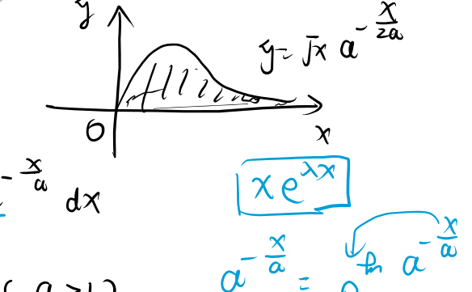
课件原图展开
📐 课件原图: 曲线 y=√x·a^{−x/2a} 图像（定积分 页17）
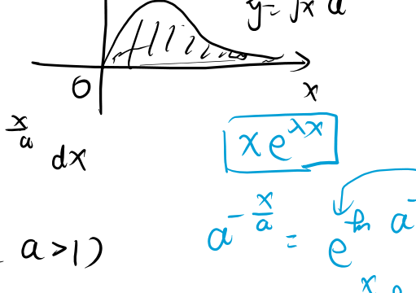
课件原图展开
📐 课件原图: 曲线 y=√x·a^{−x/2a} 区域（微分方程(1) 页4）
$D$ 是 $y = x^a \cdot a^{-\frac{x^2}{a}}$ $(a>1,0\leq x<+\infty)$ 下方、$x$ 轴上方的无界区域。
(1) 求 $D$ 绕 $x$ 轴旋转的体积 $V(a)$; (2) $a$ 为何值时 $V(a)$ 最小?
解答过程
① $V(a) = \pi\int_0^{+\infty} y^2 dx = \pi\int_0^{+\infty} x^{2a} a^{-\frac{2x^2}{a}}dx$ 【修正: 原稿指数 $a^{-x/a}$ 与题干 $y=x^a a^{-x^2/a}$ 不符, 应为 $y^2=x^{2a}a^{-2x^2/a}$】无界区域绕 $x$ 轴仍是垫片法: $dV=\pi y^2dx$; 题干本身指数可能有 OCR 损耗, 此处按题干给出形式修正
② OCR 答案: $V(a) = \frac{a^2\pi}{\ln^2 a}$【存疑】按 ① 的被积函数用 $\Gamma$ 函数可积出 $V(a)=\frac{\pi}{2}\Gamma(a+\frac12)\left(\frac{a}{2\ln a}\right)^{a+\frac12}$, 与 OCR 答案不一致, 疑题干或答案 OCR 有损, 数值无法核实, 保留原答案待对原书
③ 求最小值: 令 $g(a)=\frac{a}{\ln a}$, $g'(a)=0 \Rightarrow a=e$若按 OCR 答案 $V(a)\propto\frac{a^2}{\ln^2a}$, 最小化等价于最小化 $\frac{a}{\ln a}$; $g'=\frac{\ln a-1}{\ln^2a}=0$ 得 $\ln a=1$, 即 $a=e$
④ $V(e) = \pi e^2$ 为最小值代入 $a=e$: $\frac{a^2\pi}{\ln^2a}=\frac{e^2\pi}{1}=\pi e^2$; $g$ 在 $(1,e)$ 递减、$(e,\infty)$ 递增, $a=e$ 处取最小
※ 偏题: 广义积分旋转体体积+最值 (数一数二); 题干指数与答案存疑已标注, 掌握垫片法与最值步骤即可。
十三、弧长、表面积与形心 (数一数二)
例 13.1 弧长 【0510（2）例 5.24】
曲线 $y = \int_0^x \tan t\,dt$ $(0\leq x\leq\frac{\pi}{4})$ 的弧长。
- 理论曲线弧长 相关例 13.4 同直角坐标弧长 $s=\int\sqrt{1+y'^2}\,dx$, 本例还嵌变上限求导
解答过程
① $y'(x) = \tan x$变上限求导: 被积函数代入上限 $x$; $x\in[0,\frac{\pi}{4}]$ 上 $\tan x\ge0$, 无绝对值烦恼
② $s = \int_0^{\pi/4} \sqrt{1+\tan^2 x}\,dx = \int_0^{\pi/4} \sec x\,dx$弧长公式 $s=\int\sqrt{1+y'^2}dx$; 恒等式 $1+\tan^2x=\sec^2x$, 该区间 $\sec x>0$ 去根号
③ $= \ln|\sec x+\tan x|\big|_0^{\pi/4} = \ln(\sqrt{2}+1) - \ln 1 = \ln(1+\sqrt{2})$$\int\sec x\,dx=\ln|\sec x+\tan x|+C$ 是需要背的公式; $\sec\frac{\pi}{4}=\sqrt2$, $\tan\frac{\pi}{4}=1$, 下端 $\ln1=0$
⭐ 经典: 弧长公式 + 变上限: $y'=\tan x$, $1+\tan^2=\sec^2$ 化标准积分, 结果 $\ln(1+\sqrt2)$。
例 13.2 对数螺线弧长 【0510（2）例 5.25】
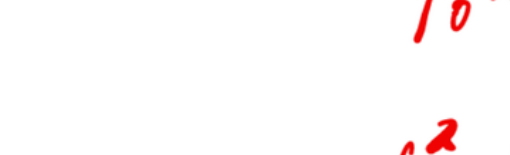
课件原图展开
📐 课件原图: 对数螺线 r=e^θ 图形（0510(2) 页15）
对数螺线 $r=e^\theta$ $(0\leq\theta\leq\pi)$ 的弧长。
- 理论曲线弧长 相关例 13.1 弧长同族, 本例换极坐标公式 $s=\int\sqrt{r^2+r'^2}\,d\theta$
解答过程
① $r'(\theta) = e^\theta$对数螺线的导数还是自身, 这是它弧长好算的原因
② $s = \int_0^\pi \sqrt{r^2+r'^2}\,d\theta = \int_0^\pi \sqrt{2e^{2\theta}}\,d\theta = \sqrt{2}\int_0^\pi e^\theta d\theta$极坐标弧长公式 $s=\int\sqrt{r^2+r'^2}\,d\theta$; $r^2+r'^2=2e^{2\theta}$, 开方提取 $\sqrt2\,e^\theta$ ($e^\theta>0$)
③ $= \sqrt{2}(e^\pi-1)$$\int_0^\pi e^\theta d\theta=e^\pi-1$, 指数函数积分直接代上下限
⭐ 经典: 极坐标弧长: $r^2+r'^2$ 恰好凑出 $2e^{2\theta}$, 开方后指数积分, 结果 $\sqrt2(e^\pi-1)$。
例 13.3 旋转曲面面积 【0510（2）例 5.26】
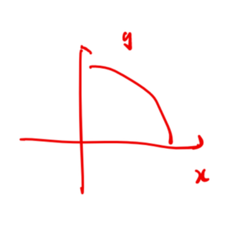
课件原图展开
📐 课件原图: y=√(1−x²) 曲线（0510(2) 页16）
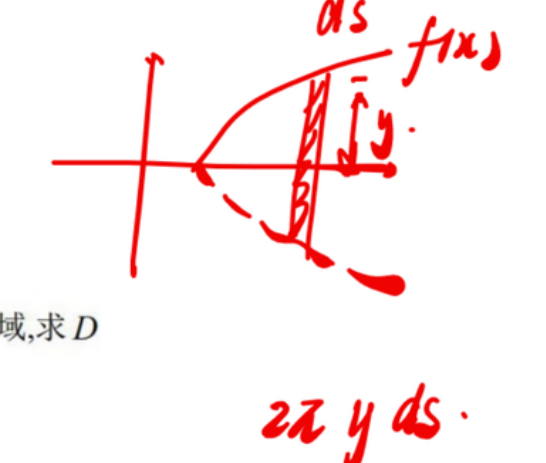
课件原图展开
📐 课件原图: 旋转曲面 ds 示意（0510(2) 页16）
$D$ 由 $y=\sqrt{1-x^2}$ $(0\leq x<1)$ 与坐标轴在第一象限围成, 绕 $x$ 轴旋转的侧面积。
解答过程
① $y=\sqrt{1-x^2}$, $y' = \frac{-x}{\sqrt{1-x^2}}$幂函数链式求导: $(1-x^2)^{1/2}$ 的导数为 $\frac12(1-x^2)^{-1/2}\cdot(-2x)$
② $\sqrt{1+y'^2} = \sqrt{1+\frac{x^2}{1-x^2}} = \frac{1}{\sqrt{1-x^2}}$通分: $1+\frac{x^2}{1-x^2}=\frac{1-x^2+x^2}{1-x^2}=\frac{1}{1-x^2}$, 开方得 $\frac{1}{\sqrt{1-x^2}}$
③ $S = 2\pi\int_0^1 y\sqrt{1+y'^2}dx = 2\pi\int_0^1 \sqrt{1-x^2}\cdot\frac{1}{\sqrt{1-x^2}}dx = 2\pi\int_0^1 dx = 2\pi$旋转侧面积公式 $S=2\pi\int y\,ds$; 两个因子恰好相消, 积分退化为 $2\pi$; 几何验证: 单位圆上半绕 $x$ 轴得半径 1 的球面, 面积 $4\pi$ 的一半 ✓
⭐ 经典: 旋转侧面积 $2\pi\int y\,ds$: 圆上弧长因子 $\frac{1}{\sqrt{1-x^2}}$ 与 $y$ 相消, 结果 $2\pi$ (半球面)。
例 13.4 弧长+形心 【0715（3）例 4.29】
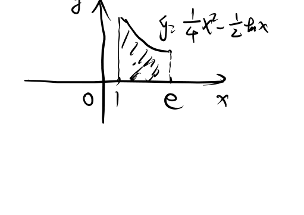
课件原图展开
📐 课件原图: 曲线 y=¼x²−½ln x 图形（微分方程(1) 页4）
$L: y = \frac{x^2}{4} - \frac{\ln x}{2}$ $(1\leq x\leq e)$。
(1) 求 $L$ 的弧长; (2) 求 $D$ ($L$ + $x=1$ + $x=e$ + $x$ 轴) 的形心横坐标。
解答过程
① $y' = \frac{x}{2} - \frac{1}{2x}$$\left(\frac{x^2}{4}\right)'=\frac{x}{2}$, $\left(\frac{\ln x}{2}\right)'=\frac{1}{2x}$
② $1+y'^2 = 1 + \frac{x^2}{4} - \frac{1}{2} + \frac{1}{4x^2} = \frac{x^2}{4} + \frac{1}{2} + \frac{1}{4x^2} = \left(\frac{x}{2}+\frac{1}{2x}\right)^2$交叉项 $-2\cdot\frac{x}{2}\cdot\frac{1}{2x}=-\frac12$ 恰与常数 1 相抵, 凑成完全平方; 开方时 $x>0$ 保证取正号
③ $s = \int_1^e \left(\frac{x}{2}+\frac{1}{2x}\right)dx = \left[\frac{x^2}{4}+\frac{\ln x}{2}\right]_1^e = \frac{e^2}{4}+\frac{1}{2} - \frac{1}{4} = \frac{e^2+1}{4}$$\frac{x}{2}$ 积出 $\frac{x^2}{4}$, $\frac{1}{2x}$ 积出 $\frac{\ln x}{2}$; 下端 $\frac14+0$
④ 形心横坐标: $\bar{x} = \frac{\iint_D x\,d\sigma}{\iint_D d\sigma}$: $A=\int_1^e y\,dx=\frac{e^3-7}{12}$, $\iint_D x\,d\sigma=\int_1^e xy\,dx=\frac{e^4-2e^2-3}{16}$, 故 $\bar{x}=\frac{3(e^4-2e^2-3)}{4(e^3-7)}$ 【修正: 原稿 $\frac{3(e^4-2e^2-7)}{4(e^3-3)}$ 与重算不符, 已修正】分子: $\int_1^e\frac{x^3}{4}dx-\int_1^e\frac{x\ln x}{2}dx=\frac{e^4-1}{16}-\frac{e^2+1}{8}$; 分母: $\frac{e^3-1}{12}-\frac12$; 数值 $\bar x\approx2.11\in[1,e]$ 偏右合理 ✓
⭐ 经典: 弧长配完全平方去根号; 形心 $\bar x=\frac{\iint x}{\iint}$ 直接算, 得 $\frac{3(e^4-2e^2-3)}{4(e^3-7)}$。
例 13.5 摆线形心 【0715（3）例 4.30】
摆线一拱 $\begin{cases} x=a(t-\sin t) \\ y=a(1-\cos t) \end{cases} (0\leq t\leq 2\pi, a>0)$ 的形心。
解答过程
① 由对称性: $\bar{x} = \pi a$摆线一拱关于 $x=\pi a$ 对称, 曲线形心落在对称轴上
② $\bar{y} = \frac{\int y\,ds}{\int ds}$, 弧长 $s = 8a$曲线形心公式; 弧长: $ds=\sqrt{x'^2+y'^2}dt=2a\sin\frac{t}{2}dt$, $\int_0^{2\pi}2a\sin\frac{t}{2}dt=8a$
③ $\int y\,ds = \int_0^{2\pi} a(1-\cos t)\cdot 2a\sin\frac{t}{2}\,dt = 4a^2\int_0^{2\pi}\sin^3\frac{t}{2}\,dt$ 【AI补全】半角公式 $1-\cos t=2\sin^2\frac{t}{2}$ 把被积函数统一成 $\sin^3\frac{t}{2}$
④ 计算得 $\bar{y} = \frac{4a}{3}$换元 $u=\frac{t}{2}$: $\int_0^{2\pi}\sin^3\frac{t}{2}dt=2\int_0^\pi\sin^3u\,du=2\cdot\frac43=\frac83$; $\int y\,ds=4a^2\cdot\frac83=\frac{32a^2}{3}$, 除以 $8a$ 得 $\frac{4a}{3}$
⑤ 形心: $(\pi a, \frac{4a}{3})$结论可背: 摆线一拱 (曲线) 的形心为 $(\pi a,\frac{4a}{3})$, 高于拱高 $2a$ 的三分之二
⭐ 经典: 摆线形心: 对称性定 $\bar x=\pi a$, 弧长 $8a$ 与 $\int y\,ds=\frac{32a^2}{3}$ 相除得 $\bar y=\frac{4a}{3}$。
十四、物理应用 (数一数二)
例 14.1 容器容积+抽水做功 【0715（3）例 4.31】
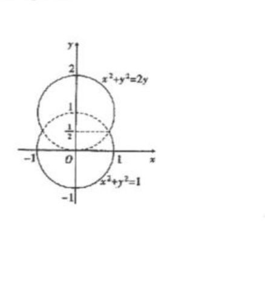
课件原图展开
📐 课件原图: 容器内侧曲线图形（定积分 页19）
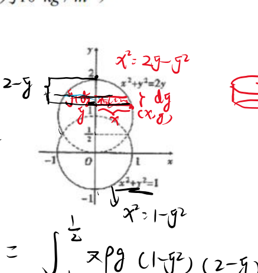
课件原图展开
📐 课件原图: 容器 x²+y²=2y 与 x²+y²=1 曲线（微分方程(1) 页5）
容器内侧由 $x^2+y^2=2y$ $(y\geq\frac{1}{2})$ 和 $x^2+y^2=1$ $(y\leq\frac{1}{2})$ 绕 $y$ 轴旋转而成。
(1) 求容积; (2) 将水全部抽出做的功。
- 理论物理应用 相关例 14.2 同为微元法, 本例抽水功 = 层重 × 提升高度, 还叠容积的垫片积分
解答过程
① 容积 $V = V_1 + V_2 = \pi\int_{1/2}^2 (2y-y^2)dy + \pi\int_{-1}^{1/2} (1-y^2)dy$上半由 $x^2=2y-y^2$ ($y\in[\frac12,2]$, 顶点 $y=2$), 下半由 $x^2=1-y^2$ ($y\in[-1,\frac12]$); 垫片法 $\pi\int x^2dy$ 分层相加
② 计算结果 $= \frac{9}{4}\pi$ (据 OCR 答案)验算: $\int_{1/2}^2(2y-y^2)dy=\frac98$, $\int_{-1}^{1/2}(1-y^2)dy=\frac98$, 各乘 $\pi$ 合计 $\frac{9\pi}{4}$ ✓ 与 OCR 一致
③ 抽水做功: $W = \rho g\int (2-y)\cdot \text{截面积}\,dy$, 结果 $= \frac{27}{8}\pi\rho g$ 【AI补全】厚度 $dy$ 的水层重力 $\rho g\pi x^2(y)dy$ 需提升 $(2-y)$ (水抽出到最高点 $y=2$); 分段积分: $\rho g\pi\left[\int_{-1}^{1/2}(2-y)(1-y^2)dy+\int_{1/2}^2(2-y)(2y-y^2)dy\right]=\rho g\pi\left(\frac{153}{64}+\frac{63}{64}\right)=\frac{27}{8}\pi\rho g$ ✓ 与 OCR 一致
⭐ 经典: 组合容器: 分段垫片积分各得 $\frac{9\pi}{8}$; 抽水功每层重力乘提升高度 $(2-y)$, 得 $\frac{27}{8}\pi\rho g$。
例 14.2 水压力 【0715（3）例 4.32】
圆形闸门半径 3 米, 水平齐于直径, 求水静压力。
- 理论物理应用 相关例 14.1 同微元法, 本例压强 $\gamma y$ 随深度线性, 凑微分收尾
解答过程
① 建坐标系: $x$ 轴为水平直径, $y$ 轴垂直向下, 圆方程为 $x^2+y^2=9$闸门上缘与水面齐平: 深度恰是 $y$, 从 0 (水面) 到 3 (圆心下方底端)
② 深度为 $y$ 处窄条面积 $dA = 2\sqrt{9-y^2}\,dy$, 压力微元 $dP = \gamma\cdot y\cdot 2\sqrt{9-y^2}\,dy$静水压强 $p=\gamma y$ 随深度线性; 窄条水平宽 $2\sqrt{9-y^2}$ (圆方程解出 $x$); 压力=压强×面积
③ $P = \int_0^3 2\gamma y\sqrt{9-y^2}\,dy = 2\gamma\left[-\frac{1}{3}(9-y^2)^{3/2}\right]_0^3$凑微分: $y\,dy=-\frac12d(9-y^2)$, 原函数 $-\frac13(9-y^2)^{3/2}$
④ $= 2\gamma\cdot\frac{1}{3}\cdot 27 = 18\gamma$上端 $y=3$: $0^{3/2}=0$; 下端 $y=0$: $9^{3/2}=27$; 几何验证: 半圆面积 $\frac{9\pi}{2}$ × 形心深度 $\frac{4r}{3\pi}=\frac4\pi$, 乘积 $\gamma\cdot\frac{9\pi}{2}\cdot\frac4\pi=18\gamma$ ✓
⭐ 经典: 水压力: 压强 $\gamma y$ × 窄条面积积分, 凑微分出原函数, 结果 $18\gamma$。
十五、不等式证明
例 15.1 柯西-施瓦茨不等式 【0715（2）例 4.15】
证明: $\left(\int_a^b f(x)g(x)dx\right)^2 \leq \int_a^b f^2(x)dx \cdot \int_a^b g^2(x)dx$。
解答过程
① 构造 $F(t) = \int_a^b [tf(x)+g(x)]^2 dx \geq 0$非负被积函数的积分必非负: 对一切实数 $t$ 成立, 这是判别式法的出发点
② 展开: $F(t) = t^2\int_a^b f^2 dx + 2t\int_a^b fg\,dx + \int_a^b g^2 dx$平方展开后逐项积分: $t,t^2$ 是常数可提出积分号; 交叉项系数 2 来自 $2tf(x)g(x)$
③ $F(t)\geq 0$ 对任意实数 $t$ 成立 ⇒ 判别式 $\Delta \leq 0$关于 $t$ 的二次函数恒非负 ⟺ 开口向上且与 $t$ 轴至多一个交点, 即 $\Delta\le0$ (系数 $\int f^2\ge0$)
④ $\Delta = 4\left(\int fg\right)^2 - 4\int f^2\int g^2 \leq 0$ ⇒ 即得不等式判别式公式 $\Delta=B^2-4AC$ 代入后约去公共因子 4, 移项即柯西-施瓦茨不等式; 等号当 $tf+g\equiv0$ (两函数线性相关) 时成立
⭐ 经典: 柯西-施瓦茨: 配平方积分构造二次型, 恒非负⇒判别式 $\le0$, 积分不等式证明的经典模板。
例 15.2 单调性+积分不等式 【0715（2）例 4.16】
$f$ 单调增, $0\leq g(x)\leq 1$, 证明: $\int_a^b f(x)g(x)dx \geq \int_a^b f(x)dx - \int_a^b f(x)[1-g(x)]dx$ 型。
解答过程
① 由 $0\leq g\leq 1$, 得 $\int_a^x g(t)dt \leq x-a$ 【AI补全, OCR 证明残缺】逐点 $g\le1$ 积分保持大小; 该上界保证下面辅助函数里 $a+\int_a^x g$ 落在 $[a,x]\subseteq[a,b]$ 内
② 构造辅助函数 $F(x) = \int_a^x f(t)g(t)dt - \int_a^{a+\int_a^x g(t)dt} f(t)dt$目标是证 $F(b)\ge0$; 上极限 $a+\int_a^x g$ 把 $g$ 的"积分长度"搬进 $f$ 的上限, 便于用单调性比较
③ 利用 $f$ 单调性放缩: $F'(x)=g(x)\left[f(x)-f\left(a+\int_a^x g(t)dt\right)\right]\ge0$变上限求导: 第一项 $f(x)g(x)$, 第二项 $f(\cdot)\cdot g(x)$ (内层导数即 $g(x)$); 由 $g\ge0$ 与 $x\ge a+\int_a^x g$ (①), $f$ 单调增保证中括号 $\ge0$
④ $F$ 单调不减, $F(b)\ge F(a)=0$, 即 $\int_a^b f(x)g(x)dx\ge\int_a^{a+\int_a^b g(x)dx}f(x)dx$ 【注】OCR 题干右端"$\int f-\int f(1-g)$"是恒等变形, 已按标准证法还原真题意$F(a)$: 两项上限相同、积分相减为零; 该结论是切比雪夫型积分不等式, 考研常改编
※ 偏题: 题干经 OCR 已成恒等式, 无法核对原题; 保留标准辅助函数证法 ($F$ 求导放缩), 此类题按此框架掌握。
例 15.3 凹函数积分不等式 【0715（2）例 4.17】
$f''(x)<0$, 证明: $\int_a^b f(x)dx < (b-a)f\!\left(\frac{a+b}{2}\right)$。
- 理论积分不等式策略 相关例 6.5 不等式左右正是"中点值×区间长" vs 积分, 与平均值 $\frac1{b-a}\int_a^b f$ 直接对决
解答过程
① $f''<0$ ⇒ $f$ 是凹函数(上凸)二阶导符号定凹凸: $f''<0$ 曲线开口向下 (上凸)
② 凹函数的几何意义: 曲线在弦的下方, 而中点 $f(\frac{a+b}{2})$ 处切线在曲线上方直观: 中点值 $f(\frac{a+b}{2})$ 高于区间平均 $\frac{1}{b-a}\int_a^b f$, 正是要证的不等式
③ 构造 $F(x) = \int_a^x f(t)dt - (x-a)f\!\left(\frac{a+x}{2}\right)$把结论 (积分 ≤ 中点值乘区间长) 改写成辅助函数: 证 $F(b)<0$; 固定 $a$, 上限 $x$ 变动, 中点 $\frac{a+x}{2}$ 跟着动
④ $F'(x) = f(x) - f(\frac{a+x}{2}) - \frac{x-a}{2}f'(\frac{a+x}{2})$乘积求导: $(x-a)f(\frac{a+x}{2})$ 的导数为 $f(\frac{a+x}{2})+(x-a)\cdot\frac12 f'(\frac{a+x}{2})$
⑤ 由 $f''<0$ 可得 $F'(x) < 0$, $F(b) < F(a) = 0$, 得证泰勒展开: 记 $m=\frac{a+x}{2}$, $f(x)=f(m)+f'(m)(x-m)+\frac12f''(\xi)(x-m)^2<f(m)+f'(m)(x-m)$, 而 $x-m=\frac{x-a}{2}$, 恰为 $F'$ 的符号; $F(a)=0$ 因两项都为零
⭐ 经典: 凹函数积分不等式: 辅助函数 $F$ 求导, 泰勒展开判符号, $F$ 递减证 $F(b)<0$。
例 15.4 乘积导数不等式 【0715（2）例 4.18】
$f',g'$ 连续, $f(0)=0$, $f'\geq 0$, $g'\geq 0$, 证明对 $a\in[0,1]$ 有 $\int_0^a g(x)f'(x)dx + \int_0^1 f(x)g'(x)dx \geq f(a)g(1)$。
解答过程
① 构造 $F(a) = \int_0^a g(x)f'(x)dx + \int_0^1 f(x)g'(x)dx - f(a)g(1)$把要证式子的"左减右"做成关于 $a$ 的函数: 首项上限含 $a$, 末项 $f(a)g(1)$ 是控制项
② $F'(a) = g(a)f'(a) - f'(a)g(1) = f'(a)[g(a)-g(1)] \leq 0$ (因为 $g$ 递增)变上限求导得 $g(a)f'(a)$, 末项导数 $-f'(a)g(1)$; $g$ 递增 ⇒ $g(a)\le g(1)$, $f'\ge0$ 保证乘积 $\le0$
③ $F$ 递减, $F(1) = \int_0^1 g\,df + \int_0^1 f\,dg - f(1)g(1)$递减函数左端值最大: 只需算 $F(1)$; 首项上限取 1 后与第二项合并 ($g\,df$ 即 $gf'dx$)
④ $= f(1)g(1) - f(0)g(0) - f(1)g(1) = 0$ (分部积分处理)$\int_0^1(gf'+fg')dx=\int_0^1(fg)'dx=fg\big|_0^1$; 又 $f(0)=0$ 使 $f(0)g(0)=0$, 恰好抵消
⑤ $F(a) \geq F(1) = 0$, 得证 【AI补全】$a\in[0,1]$, $F$ 递减 ⇒ $F(a)\ge F(1)$; 移项即原不等式
⭐ 经典: 含参不等式: 差式构造 $F(a)$, 求导判单调, 端点 $F(1)=0$ (乘积求导逆用) 收尾。
例 15.5 数列递推+面积极限 【0715（2）例 4.24】
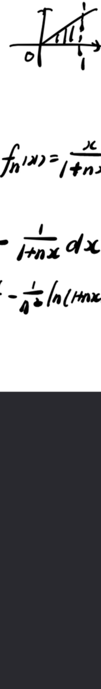
课件原图展开
📐 课件原图: 曲线 y=fₙ(x) 与 x=1、x 轴围成区域（0716(2) 页11）
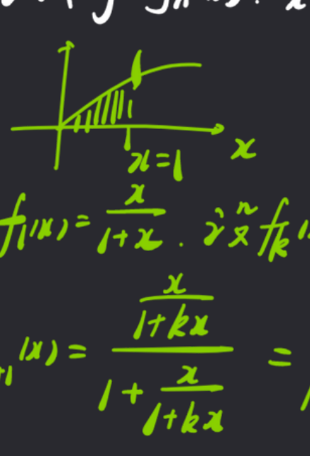
课件原图展开
📐 课件原图: 曲线 y=fₙ(x) 面积示意（0418(1) 页2）
$f_1(x) = \frac{x}{1+x}$, $f_n(x) = f[f_{n-1}(x)]$, $S_n$ 为 $y=f_n(x)$、$x=1$、$x$ 轴围成面积, 求 $\lim_{n\to\infty} nS_n$。
解答过程
① 归纳: $f_n(x) = \frac{x}{1+nx}$归纳奠基 $n=1$ 成立; 归纳步: $f_{n+1}=f\circ f_n=\frac{\frac{x}{1+nx}}{1+\frac{x}{1+nx}}=\frac{x}{1+(n+1)x}$
② $S_n = \int_0^1 f_n(x)dx = \int_0^1 \frac{x}{1+nx}dx$图形在 $x$ 轴上方 ($f_n\ge0$), 围成面积即 $[0,1]$ 上的定积分
③ $= \frac{1}{n}\int_0^1 \left(1-\frac{1}{1+nx}\right)dx = \frac{1}{n} - \frac{\ln(1+n)}{n^2}$ 【AI补全】拆项: $\frac{x}{1+nx}=\frac1n\left(1-\frac{1}{1+nx}\right)$; $\int_0^1\frac{dx}{1+nx}=\frac{\ln(1+n)}{n}$, 两段分别积分
④ $nS_n = 1 - \frac{\ln(1+n)}{n} \to 1$ ($n\to\infty$)$\frac{\ln(1+n)}{n}\to0$: 对数增长慢于任何正次幂; 极限为 1
⭐ 经典: 递推函数列: 归纳出 $f_n=\frac{x}{1+nx}$, 面积积分后乘 $n$ 取极限, 得 1。
⬅ 返回 理论笔记